4.9 Regiones de Confianza y Comparaciones Simultáneas entre las Componentes del Vector de Medias \(\underline{\boldsymbol \mu}\)
Extensión del concepto de intervalo de confianza univariado para un parámetro al caso de una región de confianza multivariada.
Considere el vector \(\underline{\theta}\) de parámetros desconocidos de una población, y sea \(\Theta\) su espacio paramétrico.
Una región de confianza para \(\underline{\theta}\) es un conjunto que contiene los posibles valores de \(\Theta\).
Esta región está determinada por los datos, y será denotada por \(R(\mathbf{X})\) , donde \[ \mathbf{X}_{n\times p}=\begin{bmatrix} x_{11} & x_{12} & \cdots & x_{1p}\\ x_{21} & x_{22} & \cdots & x_{2p}\\ \vdots & \vdots & & \vdots \\ x_{n1} & x_{n2} & \cdots & x_{np} \end{bmatrix}= \begin{bmatrix} \underline{\mathbf{x}}_{\ 1} \\ \underline{\mathbf{x}}_{\ 2} \\ \vdots \\ \underline{\mathbf{x}}_{\ n} \end{bmatrix}= \begin{bmatrix} \underline{\mathbf{x}}^{(1)} & \underline{\mathbf{x}}^{(2)} & \cdots & \underline{\mathbf{x}}^{(n)} \end{bmatrix} \ \ , \ \ \text{es la matriz de datos} \] Se dice que \(R(\mathbf{X})\) es una región con \((1-\alpha)\%\) de confianza para \(\underline{\boldsymbol \mu}\) si, antes de obtener la muestra se tiene que:
\[ P\biggl[R(\mathbf{X})-\text{Contenga al verdadero valor de} \ \ \underline{\theta}\biggr]=1-\alpha \]
4.9.1 Construcción de una Región de Confianza para \(\underline{\boldsymbol \mu}\) Cuando la Población tiene Distribución \(N_p(\underline{\boldsymbol \mu},\mathbf{\Sigma})\), con \(\underline{\boldsymbol \mu}\) y \(\mathbf{\Sigma}\) desconocidos
Bajo normalidad multivariada se tiene que: \[ T^2=n\ (\underline{\overline{\mathbf{x}}}-\underline{\boldsymbol{\mu}})^t\mathbf{S}^ {-1}(\underline{\overline{\mathbf{x}}}-\underline{\boldsymbol{\mu}})\sim \frac{(n-1)p}{(n-p)}F_{p\ ,\ n-p}, \]
luego, se tiene que antes de obtener la muestra, \[ P\left[T^2=n(\underline{\overline{\mathbf{x}}}-\underline{\boldsymbol{\mu}})^t\mathbf{S}^ {-1}(\underline{\overline{\mathbf{x}}}-\underline{\boldsymbol{\mu}}) \leq \frac{(n-1)p}{(n-p)}F_{\alpha; p,n-p}\right]=1-\alpha. \] Lo anterior quiere decir que:
el vector de media \(\underline{\overline{\mathbf{x}}}\) está dentro de una distancia dada por: \(\sqrt{\frac{(n-1)p}{(n-p)}F_{\alpha; p,n-p}}\) del vector \(\mathbf{\underline{\boldsymbol \mu}}\) con probabilidad de (\(1-\alpha\)).
Definición 4.1 (Región de Confianza) Una región de confianza del \((1-\alpha)100\%\) para el vector de medias poblacionales \(\underline{\boldsymbol{\mu}}\) de una población normal \(p\)-dimensional, es el conjunto de todos los vectores \(\underline{\boldsymbol \mu}\) que satisfacen:
\[ T^2=n\ (\underline{\overline{\mathbf{x}}}-\underline{\boldsymbol{\mu}})^t\mathbf{S}^ {-1}(\underline{\overline{\mathbf{x}}}-\underline{\boldsymbol{\mu}}) \leq \frac{(n-1)p}{(n-p)}F_{\alpha\ ;\ p\ ,\ n-p} \]
es decir, es el conjunto de todos los vectores \(\underline{\boldsymbol \mu}\) que satisfacen: \[ T^2=n(\underline{\overline{\mathbf{x}}}-\underline{\boldsymbol{\mu}})^t\mathbf{S}^ {-1}(\underline{\overline{\mathbf{x}}}-\underline{\boldsymbol{\mu}}) \leq c^2 \ \ , \ \ \ \text{con:} \ \ \ \ \ \ c^2=\frac{(n-1)p}{(n-p)}F_{\alpha; p,n-p}. \]
Geométricamente la región de confianza, es un elipsoide centrado en \(\underline{\overline{\mathbf{x}}}\), (elipse en el caso de \(p=2\)).
Para determinar si algún vector particular, \(\underline{\boldsymbol{\mu}}_{\ 0}\) caé dentro de la región de confianza (ie. si \(\underline{\boldsymbol{\mu}}_{\ 0}\) es un valor plausible o viable para \(\underline{\boldsymbol{\mu}}\)), se necesita calcular la distancia cuadrada generalizada dada por:
\[ T_{\ 0}^2=n\ (\underline{\overline{\mathbf{x}}}-\underline{\boldsymbol{\mu}}_{\ 0})^t\mathbf{S}^ {-1}(\underline{\overline{\mathbf{x}}}-\underline{\boldsymbol{\mu}}_{\ 0}) \]
y compararla con el número percentil de la distribución \(F\)-snedecor: \[ c^2=\frac{(n-1)p}{(n-p)}F_{\alpha; p,n-p}, \]
si dicha distancia cuadrática es mayor que \(c^2\), entonces \(\underline{\boldsymbol{\mu}}_{\ 0}\) no estará en la región de confianza.
Debido a que lo anterior, es el análogo a probar: \[ \begin{cases} H_{\ 0}\ : \ \underline{\boldsymbol{\mu}} = \underline{\boldsymbol{\mu}}_{\ 0} \\ \\ H_a\ : \ \underline{\boldsymbol{\mu}} \neq \underline{\boldsymbol{\mu}}_{\ 0} \\ \end{cases} \]
se observa que la región de confianza consiste de todos aquellos vectores \(\underline{\boldsymbol{\mu}}_{\ 0}\) para los cuales la prueba \(T^2\)-de Hotelling no rechaza a \(H_{\ 0}\) en favor de \(H_a\) a un nivel de significancia de \(\alpha\).
4.9.2 Región de Confianza para el Caso de \(p=2\) (Elipse de Confianza)
Para el caso \(p=2\), los ejes de la Región de Confianza o Elipse de Confianza y sus respectivas longitudes relativas, son determinados a partir de los eigen-valores y eigen-vectores de \(\mathbf{S}\).
La desigualdad dada por, \[ n(\underline{\overline{\mathbf{x}}}-\underline{\boldsymbol{\mu}})^t\mathbf{S}^ {-1}(\underline{\overline{\mathbf{x}}}-\underline{\boldsymbol{\mu}}) \leq c^2 \]
equivale a: \[ (\underline{\overline{\mathbf{x}}}-\underline{\boldsymbol{\mu}})^t\mathbf{S}^ {-1}(\underline{\overline{\mathbf{x}}}-\underline{\boldsymbol{\mu}}) \leq \frac{c^2}{n} \]
cuya gráfica para \(p=2\), representa una elipse con la siguientes características.
Las semi-longitudes de los ejes de la elipse de confianza, están dadas por: \[ \sqrt{\lambda_i}\frac{c}{\sqrt{n}}=\frac{\sqrt{\lambda_i}}{\sqrt{n}}\sqrt{\dfrac{(n-1)p}{n-p}F_{\alpha; \ p, n-p}} \ \ \ ,\ \ \ i=1,2 \]
unidades medidas a lo largo de los eigen-vectores de \(\mathbf{S}\), \(\mathbf{e}_i\).
Iniciando en el centro \(\underline{\overline{\mathbf{x}}}\), las direcciones de los ejes de la elipse de confianza son: \[ \pm \sqrt{\lambda_i}\frac{c}{\sqrt{n}}\ \mathbf{e}_i= \ \ \pm \ \ \frac{\sqrt{\lambda_i}}{\sqrt{n}}\sqrt{\dfrac{(n-1)p}{n-p}F_{\alpha; \ p, n-p}}\ \ \mathbf{e}_i \ \ \ ,\ \ \ i=1,2 \] con \(\mathbf{S}\mathbf{e}_i= \lambda_i \mathbf{e}_i\) para \(i=1,2,\ldots,p\).
El cociente entre las longitudes de los ejes de la elipse (o entre los \(\lambda_i\)’s) ayudan a identificar las longitudes relativas de cada par de ejes.
\[ \frac{2\sqrt{\lambda_1}\frac{c}{\sqrt{n}}}{2\sqrt{\lambda_2}\frac{c}{\sqrt{n}}}= \frac{\sqrt{\lambda_1}}{\sqrt{\lambda_2}}=s \]
lo que indica que, el eje mayor tiene una longitud que es \(s\)-veces la del eje menor.
Ejemplo 4.26 (Ejemplo-1 Región de Confianza) Considere los \(n=42\) datos del ejemplo 3.12 de radiación de hornos microondas usados anteriormente:
| X1 | X2 | X1 | X2 |
|---|---|---|---|
| 0.15 | 0.30 | 0.05 | 0.10 |
| 0.09 | 0.09 | 0.03 | 0.05 |
| 0.18 | 0.30 | 0.05 | 0.05 |
| 0.10 | 0.10 | 0.15 | 0.15 |
| 0.05 | 0.10 | 0.10 | 0.30 |
| 0.12 | 0.12 | 0.15 | 0.15 |
| 0.08 | 0.09 | 0.09 | 0.09 |
| 0.05 | 0.10 | 0.08 | 0.09 |
| 0.08 | 0.09 | 0.18 | 0.28 |
| 0.10 | 0.10 | 0.10 | 0.10 |
| 0.07 | 0.07 | 0.20 | 0.10 |
| 0.02 | 0.05 | 0.11 | 0.10 |
| 0.01 | 0.01 | 0.30 | 0.30 |
| 0.10 | 0.45 | 0.02 | 0.12 |
| 0.10 | 0.12 | 0.20 | 0.25 |
| 0.10 | 0.20 | 0.20 | 0.20 |
| 0.02 | 0.04 | 0.30 | 0.40 |
| 0.10 | 0.10 | 0.30 | 0.33 |
| 0.01 | 0.01 | 0.40 | 0.32 |
| 0.40 | 0.60 | 0.30 | 0.12 |
| 0.10 | 0.12 | 0.05 | 0.12 |
donde:
\[ X_1=\sqrt[4]{\text{Radiación medida con puerta cerrada} } \] \[ X_2=\sqrt[4]{\text{Radiación medida con puerta Abierta} } \]
Para los \(n=42\) pares de datos \((x_1 , x_2)\) se tienen los siguientes resúmenes descriptivos: \[ \underline{\overline{\mathbf{x}}}=\begin{bmatrix} 0.564 \\ 0.603 \end{bmatrix} , \ \ \ \ \ \mathbf{S}=\begin{bmatrix} 0.0144 & 0.0117 \\ 0.0117 & 0.0146 \end{bmatrix} \ \ \ \text{y} \ \ \ \mathbf{S}^{-1}=\begin{bmatrix} 203.018 & -163.391 \\ -163.391 & 200.228 \end{bmatrix} \]
Con estas cantidades, la elipse del \(95\%\) de confianza para \(\underline{\boldsymbol \mu}\) contiene todos los vectores \(\underline{\boldsymbol{\mu}}=(\mu_1,\mu_2)\) que satisfacen: \[ T^2=n\ (\underline{\overline{\mathbf{x}}}-\underline{\boldsymbol{\mu}})^t\mathbf{S}^ {-1}(\underline{\overline{\mathbf{x}}}-\underline{\boldsymbol{\mu}}) \leq c^2 \]
\[ \begin{align*} 42\begin{bmatrix} 0.564-\mu_1 \\ 0.603-\mu_2 \end{bmatrix}^t\begin{bmatrix} 203.018 & -163.391 \\ -163.391 & 200.228 \end{bmatrix}\begin{bmatrix} 0.564-\mu_1 \\ 0.603-\mu_2 \end{bmatrix} & \leq \frac{41(2)}{40}F_{0.05;2,40}\\ & =\frac{41(2)}{40}3.23 \\ &=6.62 \end{align*} \]
o equivalentemente: \[ 42(203.018)(0.564-\mu_1)^2+42(200.228)(0.603-\mu_2)^2 -84(163.391)(0.564-\mu_1)(0.603-\mu_2) \leq 6.62 \]
\[ \begin{bmatrix} 0.564-\mu_1 \\ 0.603-\mu_2 \end{bmatrix}^t\begin{bmatrix} 203.018 & -163.391 \\ -163.391 & 200.228 \end{bmatrix}\begin{bmatrix} 0.564-\mu_1 \\ 0.603-\mu_2 \end{bmatrix} \leq \frac{6.62}{42}=0.1576 \]
es decir: \[ (\underline{\overline{\mathbf{x}}}-\underline{\boldsymbol{\mu}})^t\mathbf{S}^ {-1}(\underline{\overline{\mathbf{x}}}-\underline{\boldsymbol{\mu}}) \leq k^2=0.1576 \]
¿Cae el vector:
\[
\underline{\boldsymbol \mu}=\begin{bmatrix}
0.562 \\ \\ 0.589
\end{bmatrix}
\]
dentro de la elipse del \(95\%\) de confianza?
Utilizando la elipse anterior donde se reemplazan los valores de \(\mu_1\) y \(\mu_2\) por los valores dados en \(\underline{\boldsymbol \mu}\), se obtiene:
\[ 1.30<6.62 \]
y por lo tanto el vector \[ \underline{\boldsymbol \mu}=\begin{bmatrix} 0.562 \\ \\ 0.589 \end{bmatrix} \] si cae dentro de la región de confianza del \(95\%\).
Equivalentemente, en la prueba de: \[ H_{\ 0} \ \ : \ \ \underline{\boldsymbol \mu}=\begin{bmatrix} 0.562 \\ \\ 0.589 \end{bmatrix} \ \ \ \text{contra:} \ \ \ H_1 \ \ : \ \ \underline{\boldsymbol \mu} \neq \begin{bmatrix} 0.562 \\ \\ 0.589 \end{bmatrix} \]
un nivel de significancia de \(\alpha = 0.05\), no se rechaza \(H_{\ 0}\).
Ahora pasemos a graficar la Región de Confianza Obtenida
El centro de la elipse es: \[ \underline{\overline{\mathbf{x}}}= \begin{bmatrix} 0.564 \\ \\ 0.603 \end{bmatrix} \] y las semi-longitudes de los ejes mayor y menor son, respectivamente, \[ \frac{\sqrt{\lambda_1}}{\sqrt{n}}\sqrt{\dfrac{(n-1)p}{n-p}F_{1-\alpha; \ p, n-p}}=\frac{\sqrt{\lambda_1}}{\sqrt{42}}\sqrt{\dfrac{(42-1)2}{42-2}F_{1-0.05; \ 2, 40}} =\frac{\sqrt{0.026}}{\sqrt{42}}\sqrt{\dfrac{(41)2}{40}3.2317}=0.064 \]
y \[ \frac{\sqrt{\lambda_2}}{\sqrt{n}}\sqrt{\dfrac{(n-1)p}{n-p}F_{1-\alpha; \ p, n-p}}=\frac{\sqrt{\lambda_2}}{\sqrt{42}}\sqrt{\dfrac{(42-1)2}{42-2}F_{1-0.05; \ 2, 40}} =\frac{\sqrt{0.002}}{\sqrt{42}}\sqrt{\dfrac{(41)2}{40}3.2317}=0.018 \]
Los ejes caen a lo largo de: \[ \underline{\mathbf{e}}_1=\begin{bmatrix} 0.704 \\ \\ 0.710 \end{bmatrix} \ \ \ \text{y} \ \ \ \underline{\mathbf{e}}_1=\begin{bmatrix} -0.710 \\ \\ 0.704 \end{bmatrix} \] cuando estos vectores son graficados desde el origen: \(\underline{\overline{\mathbf{x}}}= \begin{bmatrix} 0.564 \\ \\ 0.603 \end{bmatrix}\).
Ahora, una indicación de la elongación de la elipse de confianza está dada por el cociente entre las longitudes del eje mayor y del eje menor, ie. \[ \frac{2\sqrt{\lambda_1}\sqrt{\dfrac{(n-1)p}{(n-p)n}F_{\alpha; \ p, n-p}}}{2\sqrt{\lambda_2}\sqrt{\dfrac{(n-1)p}{(n-p)n}F_{\alpha; \ p, n-p}}}=\frac{\sqrt{\lambda_1}}{\sqrt{\lambda_2}}=\frac{\sqrt{0.026}}{\sqrt{0.002}}=\frac{0.161}{0.045}=3.6 \]
Lo que indica que el eje mayor es \(3.6\) veces el eje menor.
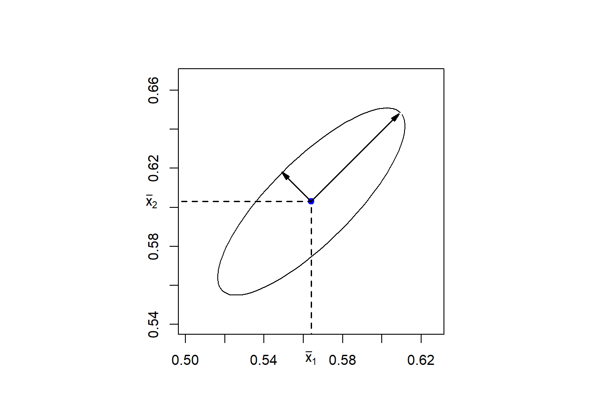
Ejemplo 4.27 (Ejemplo-2 Región de Confianza) Ahora grafiquemos elipses de confianza a partir de datos generados de una Normal Bivariada con ciertos parámetros.
Por ejemplo para: \[ \underline{\overline{\mathbf{x}}}=\begin{bmatrix} 0.564 \\ 0.603 \end{bmatrix} \ \ \ \ \ \text{y} \ \ \ \ \ \ \mathbf{S}=\begin{bmatrix} 0.0144 & 0.0117 \\ 0.0117 & 0.0146 \end{bmatrix} \]
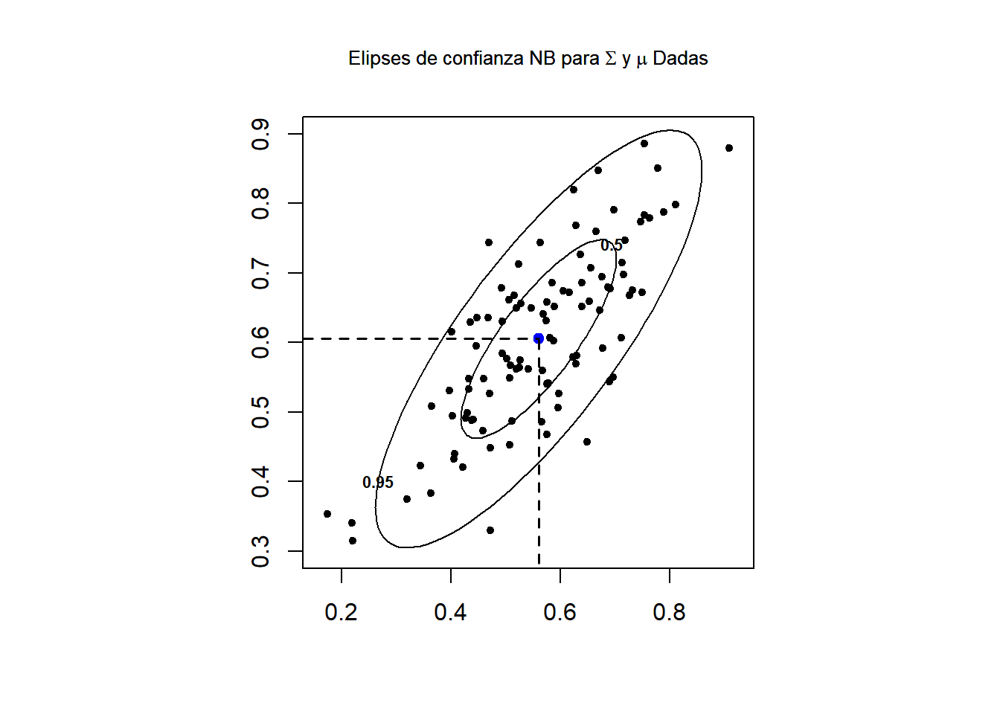
4.9.3 Intervalos de Confianza Simultáneos para las Componentes del Vector de Medias \(\underline{\boldsymbol \mu}\)
Mientras que las regiones de confianza proporcionan un conocimiento conjunto sobre los valores plausibles para \(\underline{\boldsymbol \mu}\), generalmente las conclusiones de un estudio también incluyen afirmaciones sobre las componentes individuales del vector de medias.
Para hacer esto, necesitamos construir intervalos individuales para cada componente del vector de media de forma tal que simultáneamente cada uno de ellos contenga a sus medias bajo una probabilidad especificada.
Esta clase de intervalos son llamados Intervalos de Confianza Simultáneos.
Al hacer lo anterior, se adopta la actitud de que toda las afirmaciones de confianza separadas o individuales deben ser simultáneamente ciertas con una alta probabilidad especificada de antemano.
4.9.3.1 Intervalos de Confianza Simultáneos Basados en la Estadística \(T^2\)-de Hotelling
Se inicia considerando afirmaciones de confianza simultáneas que están íntimamente relacionadas con la región de confianza basada en la estadística \(T^2\)-de Hotelling.
Sea \(\underline{\mathbf{x}}\sim N_p (\underline{\boldsymbol{\mu}}\ , \ \mathbf{\Sigma} )\), para el cual se tiene la muestra de datos: \[ \mathbf{X}_{n\times p}=\begin{bmatrix} x_{11} & x_{12} & \cdots & x_{1p}\\ x_{21} & x_{22} & \cdots & x_{2p}\\ \vdots & \vdots & & \vdots \\ x_{n1} & x_{n2} & \cdots & x_{np} \end{bmatrix}= \begin{bmatrix} \underline{\mathbf{x}}_{\ 1} \\ \underline{\mathbf{x}}_{\ 2} \\ \vdots \\ \underline{\mathbf{x}}_{\ n} \end{bmatrix}= \begin{bmatrix} \underline{\mathbf{x}}^{(1)} & \underline{\mathbf{x}}^{(2)} & \cdots & \underline{\mathbf{x}}^{(n)} \end{bmatrix} \ \ , \ \ \text{es la matriz de datos} \]
y considere la c.l dada por: \[ Z=a_1X_1+a_2X_2+\cdots+a_pX_p= \underline{a}^t \underline{\mathbf{x}} \]
Claramente, se tiene que: \[ \mu_Z=E[Z]=\underline{a}^t \underline{\boldsymbol{\mu}} \ \ \ \ \text{y} \ \ \ \sigma_Z^2=Var[Z]=\underline{a}^t \mathbf{\Sigma} \underline{a} \]
Además, por la propiedad 3.5.2 de la NM, se tiene que: \[ Z \sim N\biggl(\underline{a}^t \underline{\boldsymbol{\mu}}\ , \ \underline{a}^t \mathbf{\Sigma} \underline{a} \biggr) \]
Si se tiene disponible una m.a \(\underline{\mathbf{x}}_1,\underline{\mathbf{x}}_2,\ldots,\underline{\mathbf{x}}_n\) de la distribución \(N_p (\underline{\boldsymbol{\mu}} \ , \ \mathbf{\Sigma})\), se tendrá también una m.a correspondiente a la variable \(Z\), tomando las respectivas combinaciones lineales, ie. \[ Z_j=\underline{a}^t \mathbf{x}_j=a_1x_{j1}+a_2x_{j2}+\cdots +a_px_{jp} \ , \ \ \ \text{para} \ \ j=1,2,\ldots,n. \]
La media y la varianza muestral de los valores observados de la variable \(Z\)´s dados por: \(Z_1,Z_2,\ldots,Z_n\), están dados por: \[ \overline{Z}=\frac{1}{n}\sum_{j=1}^n\ Z_j=\underline{a}^t\underline{\overline{\mathbf{x}}} \ \ \ \text{y} \ \ \ S_Z^2=\frac{1}{n-1}\sum_{j=1}^n (Z_j-\overline{Z})^2=\underline{a}^t \mathbf{S} \underline{a} \]
donde, \(\underline{\overline{\mathbf{x}}}\) y \(\mathbf{S}\) son el vector de medias muestrales y la matriz de Var-Cov muestrales de las \(\underline{\mathbf{x}}_i\), para \(i=1,2,\ldots,n\).
Los Intervalos de Confianza Simultáneos pueden ser desarrollados considerando los Intervalos de Confianza de \(\underline{a}^t\underline{\boldsymbol{\mu}}\), para cualesquier elección de \(\underline{a}\).
Para \(\underline{a}\)-fijo y \(\sigma_Z^2\)-desconocida, Un I.C del \((1-\alpha)100\%\) para \(\mu_Z=\underline{a}^t\underline{\boldsymbol{\mu}}\) basado en la estadística \(t\)-de Student:
\[ t=\frac{\overline{Z}-\mu_Z}{S_Z/\sqrt{n}}=\frac{\sqrt{n}(\underline{a}^t\underline{\overline{\mathbf{x}}} -\underline{a}^t\underline{\boldsymbol{\mu}})}{\sqrt{\underline{a}^t \mathbf{S} \underline{a}}} \]
esta dado por: \[ \overline{Z}-t_{\alpha/2\ ;\ n-1} \frac{S_Z}{\sqrt{n}} \leq \mu_Z \leq \overline{Z}+t_{\alpha/2\ ;\ n-1} \frac{S_Z}{\sqrt{n}} \]
o equivalentemente: \[ \underline{a}^t\underline{\overline{\mathbf{x}}}-t_{\alpha/2\ ;\ n-1} \frac{\sqrt{\underline{a}^t \mathbf{S} \underline{a}}}{\sqrt{n}} \leq \mu_Z \leq \underline{a}^t\underline{\overline{\mathbf{x}}}+t_{\alpha/2\ ;\ n-1} \frac{\sqrt{\underline{a}^t \mathbf{S} \underline{a}}}{\sqrt{n}} \]
ie. \[ \underline{a}^t\underline{\overline{\mathbf{x}}}\ \ \pm \ \ t_{\alpha/2\ ;\ n-1} \frac{\sqrt{\underline{a}^t \mathbf{S} \underline{a}}}{\sqrt{n}} \]
El intervalo anterior puede ser interpretado como una afirmación acerca de las componentes del vector de medias poblacionales \(\underline{\boldsymbol{\mu}}\), mediante el sigueinte procedimiento.
Por ejemplo, con \[ \underline{a}=\begin{bmatrix} 1 \\ 0 \\ \vdots \\ 0 \end{bmatrix}\ , \ \ \text{se tiene que:} \ \ \mu_Z=\underline{a}^t\underline{\boldsymbol{\mu}}=\mu_1, \ \ \]
\[ \underline{a}^t\underline{\overline{\mathbf{x}}}\ \ \pm\ \ t_{\alpha/2\ ;\ n-1} \frac{\sqrt{\underline{a}^t \mathbf{S} \underline{a}}}{\sqrt{n}} \ \ \ \ \Longleftrightarrow \ \ \ \ \overline{X}_1\ \ \pm \ \ t_{\alpha/2\ ;\ n-1} \frac{\sqrt{S_{11}}}{n} \]
el anterior I.C es el intervalo de confianza usual para la media poblacional normal \(\mu_Z=\underline{a}^t\underline{\boldsymbol{\mu}}=\mu_1\), en donde se tiene que: \(\underline{a}^t\underline{\overline{\mathbf{x}}}=\overline{X}_1\) y \(\underline{a}^t \mathbf{S} \underline{a}=S_{11}=Var[X_1]\).
De la misma forma, eligiendo un adecuado vector de constantes \(\underline{a}\) se pueden construir los intervalos de confianza para todas las componentes \(\mu_i\) del vector \(\underline{\boldsymbol \mu}\).
Sin embargo la confianza \(1-\alpha\)-asociada a cada intervalo de confianza es individual y no conjunta, y lo que se quiere es asociar una confianza “ colectiva” del \(1-\alpha\) a todos los intervalos de confianza que pueden ser generados por las diferentes elecciones de \(\underline{a}\).
¿ Cómo asociar un coeficiente de confianza “ coletivo” del \((1-\alpha)\) para los I.C que pueden ser generados mediante todas las elecciones de \(\underline{a}\) ?
Para lograr lo anterior, se debe pagar un precio:
los intervalos simultáneos son más amplios (es decir, menos precisos) que el intervalo de confianza individual para una sola elección de \(\underline{a}\).
Teorema 4.1 (IC Simultáneos T2 de Hotelling) Sea \(\underline{\mathbf{x}}_1,\underline{\mathbf{x}}_2,\ldots,\underline{\mathbf{x}}_n\) un m.a de una población \(N_p(\underline{\boldsymbol{\mu}} \ , \ \mathbf{\Sigma} )\), con \(\mathbf{\Sigma}\)-definida positiva, entonces, simultáneamente para todo \(\underline{a}\), el I.C dado por:
\[ \underline{a}^t\underline{\overline{\mathbf{x}}}\ \ \pm\ \ \underbrace{ \sqrt{\frac{(n-1)p}{(n-p)}F_{\alpha\ ;\ p\ ,\ n-p} } } \frac{ \sqrt{ \underline{a}^t \mathbf{S} \underline{a}}}{ \sqrt{n} } \]
A diferencia de: \[ \underline{a}^t\underline{\overline{\mathbf{x}}}\ \ \pm\ \ \underbrace{ t_{\alpha/2\ ;\ n-1} }\frac{\sqrt{\underline{a}^t \mathbf{S} \underline{a}}}{\sqrt{n}} \]
contendrá a \(\underline{a}^t \underline{\boldsymbol{\mu}}\) con probabilidad de \((1-\alpha)\).
A estos I.C simultáneos, se les llaman Intervalos-\(T^2\), ya que la probabilidad de cobertura de dichos intervalos se determina con la distribución \(T^2\)-de Hotelling.
Demostración (Justificación del Teorema Anterior). Dado un conjunto de datos \(\underline{\mathbf{x}}_1,\underline{\mathbf{x}}_2,\ldots,\underline{\mathbf{x}}_n\), y una elección específica de \(\underline{a}\), el intervalo de confianza para \(\underline{a}^t\underline{\boldsymbol \mu}\) es aquel conjunto de valores que satisfacen:
\[ \left|t \right|=\left| \frac{\sqrt{n}\left(\underline{a}^t \underline{\overline{\mathbf{x}}} - \underline{a}^t \underline{\boldsymbol \mu} \right) }{\sqrt{ \underline{a}^t\mathbf{S} \underline{a} } } \right| \leq t_{\alpha/2\ ; \ n-1} \]
o equivalentemente,
\[ t^2=\left( \frac{\sqrt{n}\left(\underline{a}^t \underline{\overline{\mathbf{x}}} - \underline{a}^t \underline{\boldsymbol \mu} \right) }{\sqrt{ \underline{a}^t\mathbf{S} \underline{a} } } \right)^2 = \frac{n\left(\underline{a}^t (\underline{\overline{\mathbf{x}}} - \underline{\boldsymbol \mu}) \right)^2 }{ \underline{a}^t\mathbf{S} \underline{a}} \leq t_{\alpha/2\ ; \ n-1}^2 \]
Cuando los intervalos son desarrollados para muchas elecciones de \(\underline{a}\), parece razonable esperar que la constante para el intervalo individual, \(t_{\alpha/2\ ; \ n-1}^2\), sea reemplazada por un valor \(c^2\) mayor que produzca la confianza simultánea deseada.
Sea \[ t^2(\underline{a})= \frac{ n \left(\underline{a}^t (\underline{\overline{\mathbf{x}}} - \underline{\boldsymbol \mu}) \right)^2}{\underline{a}^t\mathbf{S} \underline{a}} \]
usando esta notación entonces, el problema se reduce a obtener un valor de \(c^2\) tal que:
\[ P\bigg[t^2(\underline{a}) \leq c^2 \biggr]=1-\alpha \ , \ \ \ \forall \ \ \underline{a}\in \mathbb{R}^p \ \ \ \ \Longleftrightarrow \ \ \ \ \ \ P \left[\frac{ n \left(\underline{a}^t (\underline{\overline{\mathbf{x}}} - \underline{\boldsymbol \mu}) \right)^2}{\underline{a}^t\mathbf{S} \underline{a}} \leq c^2 \right]=1-\alpha \ , \ \ \ \forall \ \ \underline{a}\in \mathbb{R}^p \]
Esto es equivalente a obtener un valor \(c^2\) tal que: \[ P\biggl[\text{max}_{\underline{a}} \ t^2(\underline{a}) \leq c^2 \biggr]=1-\alpha \ \ \ \ \ \ \ \Longleftrightarrow \ \ \ \ \ \ P \left[\text{max}_{\ \ \underline{a}} \left( \frac{ n \left(\underline{a}^t (\underline{\overline{\mathbf{x}}} - \underline{\boldsymbol \mu}) \right)^2}{\underline{a}^t\mathbf{S} \underline{a}} \right) \leq c^2 \right]=1-\alpha \ , \ \ \ \forall \ \ \underline{a}\in \mathbb{R}^p \]
Para hallar dicho valor de \(c^2\)-se utiliza el siguiente resultado, (ver el teorema ?? del capítulo uno),
Lema 4.1 (Lema-1 ICS) Sea \(\mathbf{B}\) una matriz definida positiva y \(\underline{d}\) un vector dado cualquiera, entonces para un vector \(\underline{\mathbf{x}}_{p\times 1}\) se cumple que:
\[ \text{max}_{\ \ \underline{\mathbf{x}}} \left[ \frac{ ( \underline{\mathbf{x}}^t \underline{d})^2}{ \underline{\mathbf{x}}^t \mathbf{B} \underline{\mathbf{x}} } \right]= \underline{d}^t \mathbf{B}^{-1}\underline{d} \]
y el máximo se obtiene cuando: \(\underline{\mathbf{x}}=k \mathbf{B}^{-1}\underline{d}\), con \(k\in \mathbb{R}\) y \(k\neq 0\).
Aplicando este teorema con: \(\underline{\mathbf{x}}=\underline{a}\) , \(\underline{d}=( \overline{\mathbf{x}} - \underline{\boldsymbol \mu})\) y \(\mathbf{B}=\mathbf{S}\), se obtiene que:
\[ \begin{align*} \text{max}_{\ \ \underline{a}} \ t^2(\underline{a}) &= \text{max}_{\ \ \underline{a}}\left[ \frac{ n \left(\underline{a}^t (\underline{\overline{\mathbf{x}}} - \underline{\boldsymbol \mu}) \right)^2}{\underline{a}^t\mathbf{S} \underline{a}} \right] \\ \\ &=n \left[ \text{max}_{\underline{a}} \left( \frac{ \left(\underline{a}^t (\underline{\overline{\mathbf{x}}} - \underline{\boldsymbol \mu}) \right)^2}{\underline{a}^t\mathbf{S} \underline{a}} \right) \right]\\ \\ &=n (\underline{\overline{\mathbf{x}}} - \underline{\boldsymbol \mu})^t \mathbf{S}^{-1}(\underline{\overline{\mathbf{x}}} - \underline{\boldsymbol \mu}) \\ \\ &=T^2 \end{align*} \]
y el máximo ocurre en un \(\underline{a}\)-que es proporcional a: \(\mathbf{S}^{-1}(\underline{\overline{\mathbf{x}}} - \underline{\boldsymbol \mu})\).
Usando el resultado de que: \[ T^2=n(\underline{\overline{\mathbf{x}}}-\underline{\boldsymbol{\mu}})^t\mathbf{S}^ {-1}(\underline{\overline{\mathbf{x}}}-\underline{\boldsymbol{\mu}})\sim \frac{(n-1)p}{(n-p)}F_{p\ ,\ n-p}, \]
se tiene que antes de obtener la muestra se cumple que: \[ P\left[n(\underline{\overline{\mathbf{x}}}-\underline{\boldsymbol{\mu}})^t\mathbf{S}^ {-1}(\underline{\overline{\mathbf{x}}}-\underline{\boldsymbol{\mu}}) \leq \frac{(n-1)p}{(n-p)}F_{\alpha\ ;\ p\ ,\ n-p}\right]=1-\alpha \]
y de lo anterior se tiene que, si \(\underline{\mathbf{x}}_1,\underline{\mathbf{x}}_2,\ldots,\underline{\mathbf{x}}_n\) es una muestra aleatoria de una población \(N_p(\underline{\boldsymbol \mu} \ ,\ \mathbf{\Sigma} )\), entonces, simultáneamente para todo \(\forall \ \ \underline{a}\in \mathbb{R}^p\), el intervalo: \[ \underline{a}^t\underline{\overline{\mathbf{x}}}\ \ \pm\ \ \underbrace{ \sqrt{\frac{(n-1)p}{(n-p)}F_{\alpha; p, n-p} } } \frac{ \sqrt{ \underline{a}^t \mathbf{S} \underline{a}}}{ \sqrt{n} } \]
contendrá a \(\underline{a}^t \underline{\boldsymbol \mu}\) con probabilidad \(1-\alpha\).
A diferencia de:
\[ \underline{a}^t\underline{\overline{\mathbf{x}}}\ \ \pm\ \ \underbrace{ t_{\alpha/2\ ;\ n-1} }\frac{\sqrt{\underline{a}^t \mathbf{S} \underline{a}}}{\sqrt{n}} \]
que lo contiene para un \(\underline{a}\)-particular o individual.
Ejemplo 4.28 (Ejemplo-1 IC T2-Simulténeos) Con las elecciones sucesiva de \(\underline{a}\) para los intervalos-\(T^2\), dadas por:
\[ \underline{a}=\begin{bmatrix} 1 \\ 0 \\ \vdots \\ 0 \end{bmatrix} \ , \ \ \underline{a}=\begin{bmatrix} 0 \\ 1 \\ \vdots \\ 0 \end{bmatrix} \ , \cdots , \ \ \underline{a}=\begin{bmatrix} 0 \\ 0 \\ \vdots \\ 1 \end{bmatrix} \]
se tiene que todos los siguientes intervalos son simultáneamente verdaderos con un coeficiente de confianza del (1-\(\alpha\)): \[ \overline{x}_1 - \sqrt{\frac{(n-1)p}{(n-p)}F_{\alpha; p, n-p}} \sqrt{\frac{s_{11}}{n}} \leq \mu_1 \leq \overline{x}_1 + \sqrt{\frac{(n-1)p}{(n-p)}F_{\alpha; p, n-p}} \sqrt{\frac{s_{11}}{n}} \] \[ \overline{x}_2 - \sqrt{\frac{(n-1)p}{(n-p)}F_{\alpha; p, n-p}} \sqrt{\frac{s_{22}}{n}} \leq \mu_2 \leq \overline{x}_2 + \sqrt{\frac{(n-1)p}{(n-p)}F_{\alpha; p, n-p}} \sqrt{\frac{s_{22}}{n}} \] \[ \vdots \]
\[ \overline{x}_p - \sqrt{\frac{(n-1)p}{(n-p)}F_{\alpha; p, n-p}} \sqrt{\frac{s_{pp}}{n}} \leq \mu_p \leq \overline{x}_p + \sqrt{\frac{(n-1)p}{(n-p)}F_{\alpha; p, n-p}} \sqrt{\frac{s_{pp}}{n}} \]
Similarmente, sin modificar el nivel de confianza de \((1-\alpha)\), se pueden hacer afirmaciones acerca de la diferencia de medias \(\mu_i-\mu_k\), correspondientes a: \(\underline{a}^t=(0 , \cdots , a_i, \cdots , a_k , \cdots ,0)\) con \(a_i=1\) y \(a_k=-1\).
En este caso se tiene que: \(\underline{a}^t \mathbf{S}\underline{a}=s_{ii}-2s_{ik}+s_{kk}\), y el I.C del \((1-\alpha)100\%\) para la diferencias de medias \((\mu_i-\mu_k\)) es:
\[ (\overline{x}_i-\overline{x}_k) \ \ \pm \ \ \sqrt{\frac{(n-1)p}{(n-p)}F_{\alpha; p, n-p}} \sqrt{\frac{s_{ii}-2s_{ik}+s_{kk}}{n}} \]
Observación. Los I.C \(T^2\)-simultáneos para las componentes individuales de un vector de medias \(\underline{\boldsymbol{\mu}}\), son las sombras o proyecciones de la elipse de confianza sobre los ejes componentes.
Los intervalos \(T^2\)-simultáneos son útiles para examinar datos. El coeficiente de confianza \(1-\alpha\) no cambia para cualquier elección de \(\underline{a}\). Por tanto, se pueden evaluar las combinaciones lineales de las componentes \(\mu_i\) que ameriten inspección basados sobre un examen de los datos.
También podemos incluir afirmaciones sobre los pares de medias \((\mu_i\ ,\ \mu_k)\) usando las elipses:
\[ n\begin{bmatrix} \overline{x}_i-\mu_i \\ \overline{x}_k-\mu_k \end{bmatrix}^t \begin{bmatrix} s_{ii} & s_{ik} \\ s_{ik} & s_{kk} \end{bmatrix}^{-1} \begin{bmatrix} \overline{x}_i-\mu_i \\ \overline{x}_k-\mu_k \end{bmatrix} \leq \frac{(n-1)p}{(n-p)}F_{p,n-p}(\alpha) \]
o equivalentemente: \[ \begin{bmatrix} \overline{x}_i-\mu_i \\ \overline{x}_k-\mu_k \end{bmatrix}^t \begin{bmatrix} s_{ii} & s_{ik} \\ s_{ik} & s_{kk} \end{bmatrix}^{-1} \begin{bmatrix} \overline{x}_i-\mu_i \\ \overline{x}_k-\mu_k \end{bmatrix} \leq c^2=\frac{1}{n}\frac{(n-1)p}{(n-p)}F_{p,n-p}(\alpha) \]
Las cuales conservan un coeficiente de confianza \(1-\alpha\).
Ejemplo 4.29 (Ejemplo-2 IC T2-Simulténeos) En un ejemplo 4.26 sobre datos de radiación se construyó una elipse del \(95\%\) de confianza para las medias de la raíz cuarta de las variables de radiación a puerta cerrada y a puerta abierta de hornos microondas.
| X1 | X2 | X1 | X2 |
|---|---|---|---|
| 0.15 | 0.30 | 0.05 | 0.10 |
| 0.09 | 0.09 | 0.03 | 0.05 |
| 0.18 | 0.30 | 0.05 | 0.05 |
| 0.10 | 0.10 | 0.15 | 0.15 |
| 0.05 | 0.10 | 0.10 | 0.30 |
| 0.12 | 0.12 | 0.15 | 0.15 |
| 0.08 | 0.09 | 0.09 | 0.09 |
| 0.05 | 0.10 | 0.08 | 0.09 |
| 0.08 | 0.09 | 0.18 | 0.28 |
| 0.10 | 0.10 | 0.10 | 0.10 |
| 0.07 | 0.07 | 0.20 | 0.10 |
| 0.02 | 0.05 | 0.11 | 0.10 |
| 0.01 | 0.01 | 0.30 | 0.30 |
| 0.10 | 0.45 | 0.02 | 0.12 |
| 0.10 | 0.12 | 0.20 | 0.25 |
| 0.10 | 0.20 | 0.20 | 0.20 |
| 0.02 | 0.04 | 0.30 | 0.40 |
| 0.10 | 0.10 | 0.30 | 0.33 |
| 0.01 | 0.01 | 0.40 | 0.32 |
| 0.40 | 0.60 | 0.30 | 0.12 |
| 0.10 | 0.12 | 0.05 | 0.12 |
Los intervalos \(T^2\)-simultáneos del \(95\%\) de confianza para las componentes de medias son: \[ \left( \overline{x}_1 - \sqrt{\frac{(n-1)p}{(n-p)}F_{\alpha; p, n-p}} \sqrt{\frac{s_{11}}{n}} \ \ , \ \ \overline{x}_1 + \sqrt{\frac{(n-1)p}{(n-p)}F_{\alpha; p, n-p}} \sqrt{\frac{s_{11}}{n}} \right) \]
\[ \left( 0.564 - \sqrt{\frac{(41)2}{40}3.2317} \sqrt{\frac{0.0144}{42}} \ \ , \ \ 0.564 + \sqrt{\frac{(41)2}{40}3.2317} \sqrt{\frac{0.0144}{42}} \right) \]
\[ \mu_1 \ \ \in \ \ \left( 0.5163 \ \ , \ \ 0.6117 \right) \]
y para \(\underline{\boldsymbol \mu}_2\) \[ \left( \overline{x}_2 - \sqrt{\frac{(n-1)p}{(n-p)}F_{\alpha; p, n-p}} \sqrt{\frac{s_{22}}{n}} \ \ , \ \ \overline{x}_2 + \sqrt{\frac{(n-1)p}{(n-p)}F_{\alpha; p, n-p}} \sqrt{\frac{s_{22}}{n}} \right) \] \[ \left( 0.603 - \sqrt{\frac{(41)2}{40}3.2317} \sqrt{\frac{0.0145}{42}} \ \ , \ \ 0.603 + \sqrt{\frac{(41)2}{40}3.2317} \sqrt{\frac{0.0145}{42}} \right) \]
\[ \mu_2 \ \ \in \ \ \left( 0.5552 \ \ , \ \ 0.6508 \right) \]
Gráfico de Elipse de Confianza con IC-Simultáneos
El siguiente gráfico muestra la elipse del \(95\%\) de confianza y los intervalos simultáneos del \(95\%\) de confianza para los datos del ejemplo anterior los cuales son sombras o proyecciones de la elipse sobre los ejes de las componentes de medias.
\[ \underline{\overline{\mathbf{x}}}=\begin{bmatrix} 0.564 \\ 0.603 \end{bmatrix} \ \ \ \ \ \text{y} \ \ \ \ \ \ \mathbf{S}=\begin{bmatrix} 0.0144 & 0.0117 \\ 0.0117 & 0.0146 \end{bmatrix} \]
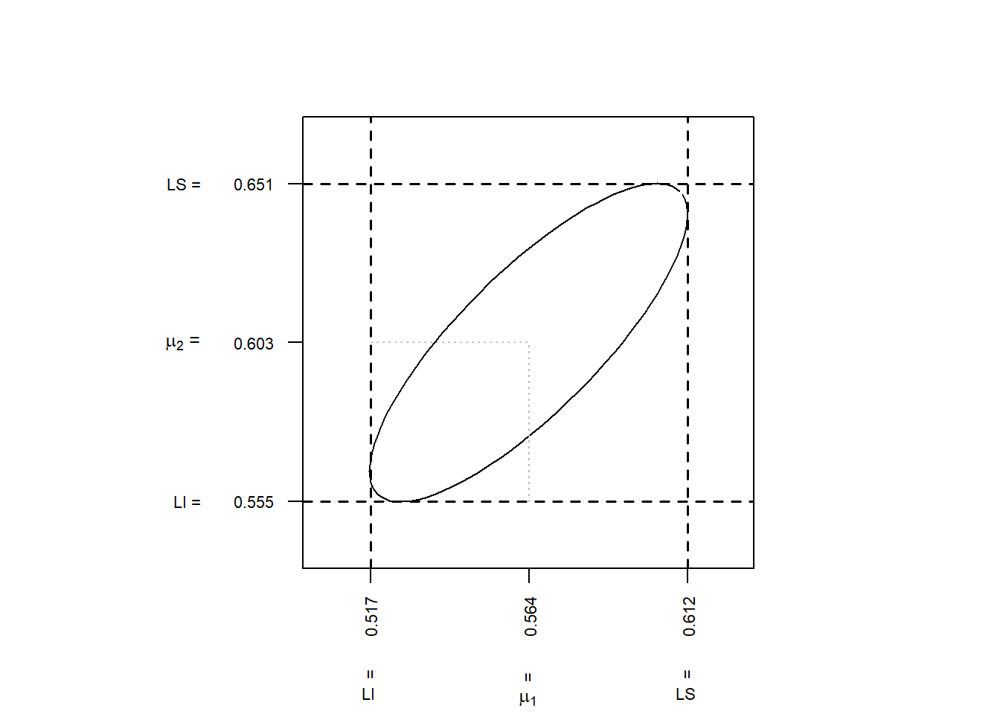
Gráfico de Elipse de Confianza e IC-Simultáneos \(T^2\) de Hoteling como sombras de la Elipse de confianza.
El siguiente gráfico muestra la elipse del \(95\%\) de confianza y los intervalos simultáneos del \(95\%\) de confianza para datos Normales Bivariados simulados con los parámetros dados, los cuales son sombras o proyecciones de la elipse sobre los ejes de las componentes de medias.
\[ \underline{\overline{\mathbf{x}}}=\begin{bmatrix} 0.564 \\ 0.603 \end{bmatrix} \ \ \ \ \ \text{y} \ \ \ \ \ \ \mathbf{S}=\begin{bmatrix} 0.0144 & 0.0117 \\ 0.0117 & 0.0146 \end{bmatrix} \]
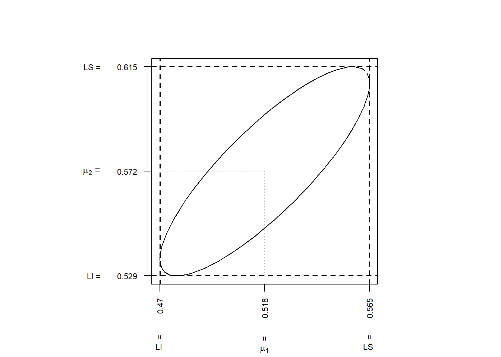
Ejemplo 4.30 (Ejemplo-3 IC T2-Simulténeos) Las notas obtenidas por \(n=87\) estudiantes en la prueba CLEP (College Level Examination Program), \(X_1\)= ciencias sociales e historia, y en la prueba CQT (College Qualification Test), \(X_2\) =aptitud verbal y \(X_3\) =ciencias, están dadas en la siguiente tabla.
| X1 | X2 | X3 | X1 | X2 | X3 | X1 | X2 | X3 | X1 | X2 | X3 |
|---|---|---|---|---|---|---|---|---|---|---|---|
| 468 | 41 | 26 | 488 | 51 | 27 | 494 | 41 | 24 | 468 | 49 | 25 |
| 428 | 39 | 26 | 488 | 62 | 18 | 541 | 47 | 25 | 507 | 54 | 26 |
| 514 | 53 | 21 | 587 | 56 | 26 | 362 | 36 | 17 | 527 | 47 | 31 |
| 547 | 67 | 33 | 421 | 38 | 16 | 408 | 28 | 17 | 527 | 47 | 26 |
| 614 | 61 | 27 | 481 | 52 | 26 | 594 | 68 | 23 | 435 | 50 | 28 |
| 501 | 67 | 29 | 428 | 40 | 19 | 501 | 25 | 26 | 660 | 70 | 25 |
| 421 | 46 | 22 | 640 | 65 | 25 | 687 | 75 | 33 | 733 | 73 | 33 |
| 527 | 50 | 23 | 574 | 61 | 28 | 633 | 52 | 31 | 507 | 45 | 28 |
| 527 | 55 | 19 | 547 | 64 | 27 | 647 | 67 | 29 | 527 | 62 | 29 |
| 620 | 72 | 32 | 580 | 64 | 28 | 647 | 65 | 34 | 428 | 37 | 19 |
| 587 | 63 | 31 | 494 | 53 | 26 | 614 | 59 | 25 | 481 | 48 | 23 |
| 541 | 59 | 19 | 554 | 51 | 21 | 633 | 65 | 28 | 507 | 61 | 19 |
| 561 | 53 | 26 | 647 | 58 | 23 | 448 | 55 | 24 | 527 | 66 | 23 |
| 468 | 62 | 20 | 507 | 65 | 23 | 408 | 51 | 19 | 488 | 41 | 28 |
| 614 | 65 | 28 | 454 | 52 | 28 | 441 | 35 | 22 | 607 | 69 | 28 |
| 527 | 48 | 21 | 427 | 57 | 21 | 435 | 60 | 20 | 561 | 59 | 34 |
| 507 | 32 | 27 | 521 | 66 | 26 | 501 | 54 | 21 | 614 | 70 | 23 |
| 580 | 64 | 21 | 468 | 57 | 14 | 507 | 42 | 24 | 527 | 49 | 30 |
| 507 | 59 | 21 | 587 | 55 | 30 | 620 | 71 | 36 | 474 | 41 | 16 |
| 521 | 54 | 23 | 507 | 61 | 31 | 415 | 52 | 20 | 441 | 47 | 26 |
| 574 | 52 | 25 | 574 | 54 | 31 | 554 | 69 | 30 | 607 | 67 | 32 |
| 587 | 64 | 31 | 507 | 53 | 23 | 348 | 28 | 18 | NA | NA | NA |
De los datos se tiene que: \[ \underline{\overline{\mathbf{x}}}=\begin{bmatrix} 526.586 \\ 54.69 \\ 25.126 \end{bmatrix} \ , \ \ \ \ \mathbf{S}=\begin{bmatrix} 5808.059 & 597.835 & 222.03 \\ 597.835 & 126.054 & 23.389 \\ 222.03 & 23.389 & 23.112 \end{bmatrix} \]
Los intervalos de confianza del \(95\%\) para las componentes del vector de medias son:
\[ \left( \overline{x}_1 - \sqrt{\frac{(n-1)p}{(n-p)}F_{\alpha; p, n-p}} \sqrt{\frac{s_{11}}{n}} \ \ , \ \ \overline{x}_1 + \sqrt{\frac{(n-1)p}{(n-p)}F_{\alpha; p, n-p}} \sqrt{\frac{s_{11}}{n}} \right) \]
\[ \left( 526.586 - \sqrt{\frac{(86)3}{84}2.7132} \sqrt{\frac{5808.059}{87}} \ \ , \ \ 526.586 + \sqrt{\frac{(86)3}{84}2.7132} \sqrt{\frac{5808.059}{87}} \right) \]
\[ \mu_1 \ \ \in \ \ \left( 502.999 \ \ , \ \ 550.173 \right) \]
\[ \left( \overline{x}_2 - \sqrt{\frac{(n-1)p}{(n-p)}F_{p, n-p}(\alpha)} \sqrt{\frac{s_{22}}{n}} \ \ , \ \ \overline{x}_2 + \sqrt{\frac{(n-1)p}{(n-p)}F_{p, n-p}(\alpha)} \sqrt{\frac{s_{22}}{n}} \right) \]
\[ \left( 54.69 - \sqrt{\frac{(86)3}{84}2.7132} \sqrt{\frac{126.054}{87}} \ \ , \ \ 54.69 + \sqrt{\frac{(86)3}{84}2.7132} \sqrt{\frac{126.054}{87}} \right) \]
\[ \mu_2 \ \ \in \ \ \left( 51.215 \ \ , \ \ 58.165 \right) \]
\[ \left( \overline{x}_3 - \sqrt{\frac{(n-1)p}{(n-p)}F_{p, n-p}(\alpha)} \sqrt{\frac{s_{33}}{n}} \ \ , \ \ \overline{x}_3 + \sqrt{\frac{(n-1)p}{(n-p)}F_{p, n-p}(\alpha)} \sqrt{\frac{s_{33}}{n}} \right) \]
\[ \left( 25.126 - \sqrt{\frac{(86)3}{84}2.7132} \sqrt{\frac{23.112}{87}} \ \ , \ \ 25.126 + \sqrt{\frac{(86)3}{84}2.7132} \sqrt{\frac{23.112}{87}} \right) \]
\[ \mu_3 \ \ \in \ \ \left( 23.638 \ \ , \ \ 26.614 \right) \]
Con la posible excepción de las notas sobre aptitud verbal \(X_2\), los gráficos \(Q-Q\) y los diagramas de dispersión para cada par de variables no rebelan serios alejamientos de la normalidad. Además, como lo veremos, aunque los datos no sean normalmente distribuidos, la metodología se puede justificar dado que la muestra es lo suficientemente grande.
Los intervalos \(T^2\)-simultáneos son más amplios que los intervalos univariados debido a que los 3 intervalos son válidos para una misma confianza del \(95\%\).
4.9.4 IC \(T^2\) Simultáneos para Diferencias de Medias
Los intervalos obtenidos anteriormente pueden ser más amplios de lo necesario, debido a que, con la misma confianza, podemos hacer inferencias para cualquier combinación lineal de las componentes de medias, tales como las diferencias de medias.
Por ejemplo, con \(\underline{a}=\begin{bmatrix} 0 \\ 1\\ -1 \end{bmatrix}\) el intervalo para \(\mu_2-\mu_3\), tiene los siguientes límites: \[ (\overline{x}_2- \overline{x}_3) \ \ \pm \ \ \sqrt{\frac{(n-1)p}{(n-p)}F_{p, n-p}(\alpha)} \sqrt{\frac{s_{22}+s_{33}-2s_{23}}{n}} \]
\[ (54.69 - 25.126) \ \ \pm \ \ \sqrt{\frac{(87-1)3}{(87-3)}F_{1-\alpha\ ;\ p, n-p}} \sqrt{\frac{126.054 + 23.112 - 2 (23.389) }{87}} \] \[ (29.564) \ \ \pm \ \ \sqrt{ 8.3335 } \sqrt{\frac{102.388}{87}} \]
\[ (29.564) \ \ \pm \ \ 3.1317 \]
\[ \mu_1-\mu_2 \ \ \in \ \ \biggl( 26.4323 \ \ , \ \ 32.6957 \biggr) \]
Por tanto, \(\biggl(26.4323 \ \ , \ \ 32.6957 \biggr)\) es un intervalo de confianza del \(95\%\) para \(\mu_2-\mu_3\).
Similarmente, se pueden construir intervalos simultáneos para las otras diferencias de medias.
Finalmente, se pueden construir elipses de confianza del \(95\%\) para cada par de medias y los mismos intervalos de confianza \(T^2\)-simultáneos del \(95\%\) se mantienen. Por ejemplo, para el par de medias \((\mu_2,\mu_3)\), se tiene que:
\[ n\begin{bmatrix} \overline{x}_2-\mu_2 \\ \overline{x}_3-\mu_3 \end{bmatrix}^t \begin{bmatrix} s_{22} & s_{23} \\ s_{23} & s_{33} \end{bmatrix}^{-1} \begin{bmatrix} \overline{x}_2-\mu_2 \\ \overline{x}_3-\mu_3 \end{bmatrix} \leq c^2=\frac{(n-1)p}{(n-p)}F_{p,n-p}(\alpha) \]
o equivalentemente:
\[ \begin{bmatrix} \overline{x}_2-\mu_2 \\ \overline{x}_3-\mu_3 \end{bmatrix}^t \begin{bmatrix} s_{22} & s_{23} \\ s_{23} & s_{33} \end{bmatrix}^{-1} \begin{bmatrix} \overline{x}_2-\mu_2 \\ \overline{x}_3-\mu_3 \end{bmatrix} \leq k^2 \ \ \ \ \ \ \ \text{con:}\ \ \ \ \ \ k^2=\frac{c^2}{n}= \frac{\frac{(n-1)p}{(n-p)}F_{p,n-p}(\alpha)}{n} \]
Para este ejemplo:
\[ 87\begin{bmatrix} 54.69-\mu_2 \\ 25.13-\mu_3 \end{bmatrix}^t \begin{bmatrix} 126.05 & 23.37 \\ 23.37 & 23.11 \end{bmatrix}^{-1} \begin{bmatrix} 54.69-\mu_2 \\ 25.13-\mu_3 \end{bmatrix} \leq 8.3335 = c^2 = \frac{(86)3}{84}(2.7132 ) \]
equivalentemente a:
\[ \begin{bmatrix} 54.69-\mu_2 \\ 25.13-\mu_3 \end{bmatrix}^t \begin{bmatrix} 126.05 & 23.37 \\ 23.37 & 23.11 \end{bmatrix}^{-1} \begin{bmatrix} 54.69-\mu_2 \\ 25.13-\mu_3 \end{bmatrix} \leq 0.0958 = k^2 = \frac{c^2}{n} = \frac{ \frac{(86)3}{84}(2.7132)}{87} \]
o equivalentemente: \[ 0.849(54.69-\mu_2)^2+4.633(25.13-\mu_3)^2-2(54.69-\mu_2)(25.13-\mu_3)\leq 8.3335 \]
La siguiente gráfica presenta la elipse de confianza anterior del \(95\%\) y las elipses para los otros 2-pares de medias, junto con los intervalos generados por las sombras o proyecciones de las elipses sobre los ejes de medias, los cuales son los respectivos intervalos de confianza \(T^2\)-simultáneos.
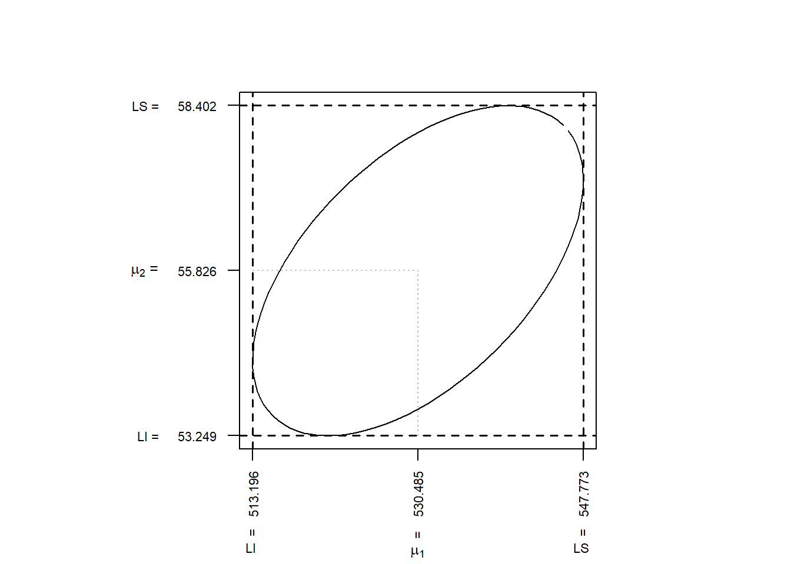
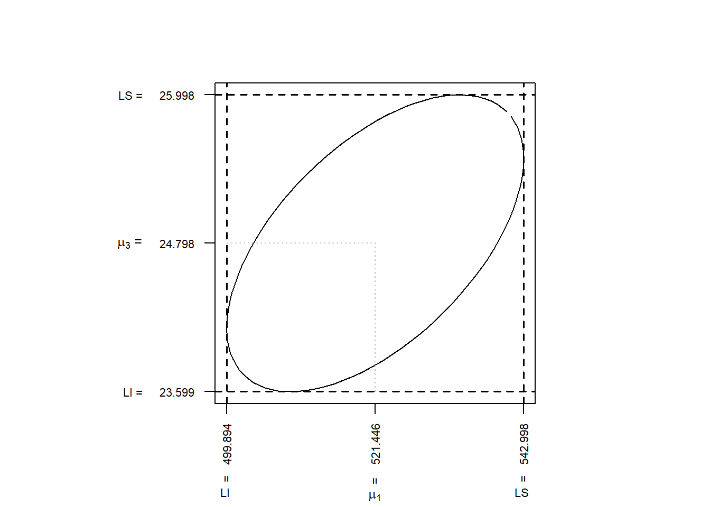
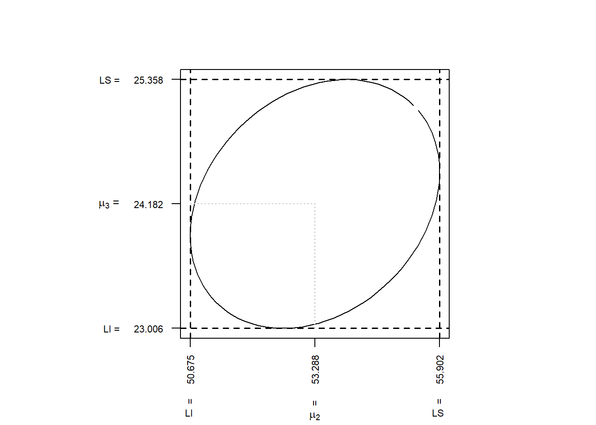
4.9.4.1 Comparación de los Intervalos de Confianza Simultáneos con los Intervalos Univariados o uno a la vez
Una aproximación alternativa para construir intervalos de confianza es considerar las componentes de \(\underline{\boldsymbol \mu}\) una a una con \(\underline{a}^t=(0, \cdots , a_i, \cdots,0)\) con \(a_i=1\).
Esta aproximación ignora la estructura de covarianza de las \(p\) variables y conduce a los intervalos dados por: \[ \overline{x}_1 - t_{\alpha/2\ ;\ n-1} \sqrt{\frac{s_{11}}{n}} \leq \mu_1 \leq \overline{x}_1 + t_{\alpha/2\ ;\ n-1} \sqrt{\frac{s_{11}}{n}} \] \[ \overline{x}_2 - t_{\alpha/2\ ;\ n-1} \sqrt{\frac{s_{22}}{n}} \leq \mu_2 \leq \overline{x}_2 + t_{\alpha/2\ ;\ n-1} \sqrt{\frac{s_{22}}{n}} \] \[ \vdots \] \[ \overline{x}_p - t_{\alpha/2\ ;\ n-1} \sqrt{\frac{s_{pp}}{n}} \leq \mu_p \leq \overline{x}_p + t_{\alpha/2\ ;\ n-1} \sqrt{\frac{s_{pp}}{n}} \]
Aunque, antes de muestrear, el \(i\)-ésimo intervalo tiene probabilidad \(1-\alpha\) de contener a \(\mu_i\), sin embargo, en general no se puede asegurar cuál es la probabilidad de que todos los intervalos contengan a sus respectivos \(\mu_i\). Como se ha señalado, esta probabilidad no es \(1-\alpha\).
Ejemplo 4.31 (Comparación de ICS T2-Simultáneos con IC Individuales) Considere el caso especial donde las observaciones proceden de una distribución normal conjunta, con
\[ \mathbf{\Sigma}=\begin{bmatrix} \sigma_{11} & 0 & \cdots & 0 \\ & \sigma_{22} & \cdots & 0 \\ & & \ddots & \\ & & & \sigma_{pp} \end{bmatrix} \]
es decir, las variables son independientes.
Sea \(I_i\) el intervalo aleatorio para \(\mu_i\) con probabilidad \((1-\alpha)\).
Debido a la independencia de las variables, se tiene que antes de que la muestra sea seleccionada se cumple que:
\[ \begin{align*} & P\biggl[ \text{Todos los t-intervalos contengan las} \ \mu_i \biggr]\\ \\ &=P\biggl[\mu_1\in I_1 ,\mu_2\in I_2 , \ldots , \mu_p\in I_p \biggr] \\ \\ &= \prod_{i=1}^p P\bigl[\mu_i\in I_i\bigr] \\ \\ &=(1-\alpha)(1-\alpha)\cdots(1-\alpha)\\ \\ &=(1-\alpha)^p \end{align*} \]
de donde por ejemplo, si \((1-\alpha)=0.95\) y \(p=6\), entonces: \[ P\biggl[ \text{Todos los t-intervalos contengan las} \ \mu_i \biggr] =(0.95)^6=0.74. \]
Para garantizar una probabilidad de \(1-\alpha\) de que todos los intervalos contengan simultáneamente la componente de media respectiva \(\mu_i\), los intervalos individuales deberían ser más amplios que los intervalos separados basados en la \(t\)-student, y el qué tan ancho, depende tanto de \(p\) como de \(n\) al igual que de \((1-\alpha)\).
Por ejemplo: Para \((1-\alpha)=0.95\), \(n=15\) y \(p=4\), el factor multiplicador de la cantidad: \[ \sqrt{ \frac{s_{ii}}{n}} \]
para los intervalos separados (o individuales) es:
\[ t_{\alpha/2;n-1}=t_{0.025,14}=2.145 \]
y para los intervalos \(T^2\)-simultáneos dicho factor es: \[ \sqrt{\frac{(n-1)p}{n-p}F_{\alpha;p,n-p}}=\sqrt{\frac{(14)4}{11}F_{0.05;4,11}}=\sqrt{\frac{56}{11}(3.36)}=4.14 \]
de donde en este caso, se tiene que los I.C \(T^2\)-simultáneos son: \[ \frac{(4.14-2.145)}{2.145}100\%=93\% \]
más anchos, que aquellos intervalos derivados usando la \(t\)-student (o individuales).
En general, el ancho de los intervalos \(T^2\)-simultáneos, relativo al ancho de los \(t\)-intervalos individuales crece para \(n\)-fijo, cuando \(p\)-crece; y decrece para \(p\)-fijo, cuando \(n\)-crece. Ver la siguiente tabla del libro (Johnson and Wichern 2007), Pág. 231.
\[ \begin{array}{c|c|cc}\hline &&\sqrt{\frac{(n-1)p}{n-p}\ F_{p\ ,\ n-p}(0.05)\ \ }\\\hline n & t_{n-1}(0.025) & p=4 & p=10 \\\hline 15&2.145&4.14&11.52\\ 25&2.064&3.60&6.39\\ 50&2.010&3.31&5.05\\ 100&1.970&3.19&4.61\\ \infty &1.960&3.08&4.28\\\hline \end{array} \]
La comparación de la tabla anterior es un poco injusta debido a que para \(n\) fijo, el nivel de confianza asociada a un conjunto de intervalos \(T^2\)-simultáneos es \(1-\alpha\), mientras que la confianza asociada a un conjunto de intervalos \(t\)-student, para el mismo \(n\), puede ser menor que \(1-\alpha\), como vimos anteriormente.
Los intervalos \(t\)-student son demasiado cortos (o precisos) para mantener un nivel de confianza global para los intervalos separados sobre, por ejemplo, las \(p\) medias. Sin embargo, algunas veces se les considera la mejor información posible sobre una media \(\mu_i\) si es la única inferencia que nos interesa. Además, algunos investigadores piensan que si se calculan los intervalos separados solamente cuando la prueba \(T^2\)-de Hotelling rechaza la hipótesis nula, ellos pueden representar con más precisión la información sobre las medias \(\mu_i\) que los intervalos \(T^2\)-simultáenos.
Los intervalos \(T^2\)-simultáneos son demasiado amplios si se aplican solamente a las \(p\)-componentes de medias. Para ver el porqué, considere la elipse de confianza y los intervalos \(T^2\)-simultáneos del ejemplo anterior:
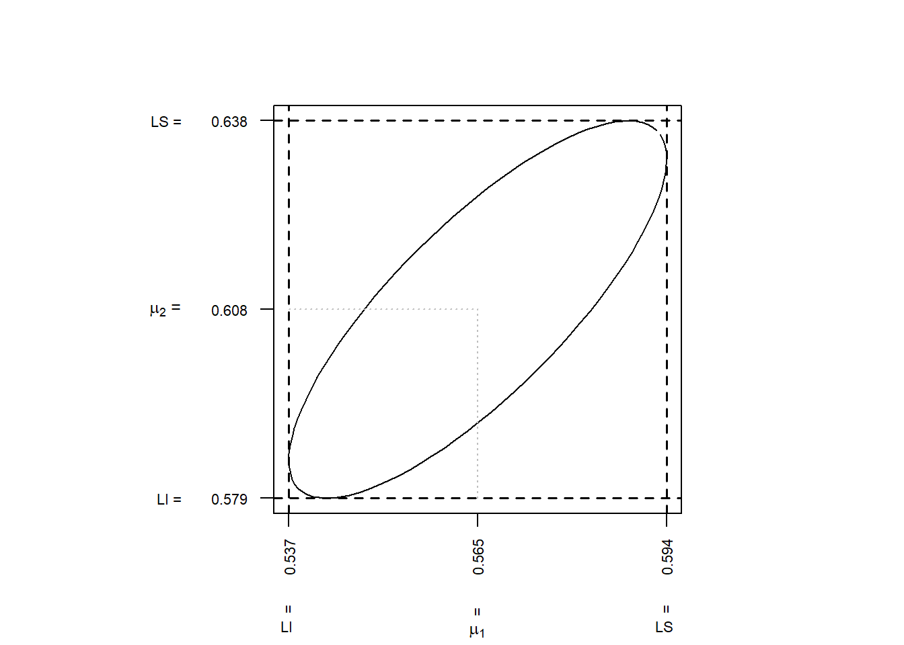
Si \(\mu_1\) cae en su intervalo \(T^2\)-simultáneo y \(\mu_2\) cae en su intervalo \(T^2\)-simultáneo, entonces \((\mu_1 \ , \ \mu_2)\) cae en el rectángulo formado por estos dos intervalos.
Este rectángulo contiene la elipse de confianza y algo más. La elipse de confianza es más pequeña que el rectángulo, pero dicha elipse tiene una probabilidad \(1-\alpha\) de contener al vector \(\underline{\boldsymbol \mu}=\begin{pmatrix} \mu_1 \\ \mu_2 \end{pmatrix}\).
En consecuencia, la probabilidad de contener la dos medias individuales \(\mu_1\) y \(\mu_2\) será mayor que \(1-\alpha\) para el rectángulo formado por los intervalos \(T^2\)-simultáneos.
Este resultado conduce a considerar una segunda aproximación para hacer comparaciones simultáneas.
4.9.5 Método de Bonferroni para Comparaciones Múltiples
Frecuentemente la atención está restringida a un número pequeño de intervalos de confianza.
En estos casos la metodología de los intervalos \(T^2\)-simultáneos puede conducir a intervalos demasiado amplios.
Si el interés se centra en un número pequeño \(m\) de componentes de medias especificas \(\mu_i\) o de \(m\) combinaciones lineales de la forma \(\underline{a}^t\underline{\boldsymbol{\mu}}=a_1\mu_1+a_2\mu_2+\cdots+a_p\mu_p\) entonces, se pueden construir I.C simultáneos mas cortos (más precisos) que los intervalos \(T^2\)-simultáneos.
El método alternativo a usar en este caso se llama: Método de Bonferroni, debido a que ha sido desarrollado a partir de la Desigualdad de Bonferroni, que se enuncia como sigue:
Para una familia finita o numerable de sucesos \(A_1\), \(A_2\), \(A_3\), \(\cdots\), se cumple: \[ P\biggl[ \bigcup_{i} A_i \biggr] \leq \sum_{i} P \bigl[A_i \bigr] \]
Suponga que antes de recolectar los datos, se quieren construir intervalos de confianza simultáneos para \(m\)-combinaciones lineales de la forma: \[ \underline{a}_1^t\underline{\boldsymbol{\mu}},\ \ \underline{a}_2^t\underline{\boldsymbol{\mu}}, \ \ \cdots , \ \ \underline{a}_m^t\underline{\boldsymbol{\mu}} \]
Sea \(C_i\) el intervalo para \(\underline{a}_i^t\underline{\boldsymbol{\mu}}\), con: \[ P\biggl[\ \ C_i \ \ \text{contenga a:}\ \ \underline{a}_i^t\underline{\boldsymbol{\mu}}\ \ \biggr]=1-\alpha_i \ \ , \ \ \text{para} \ \ \ i=1,2,\ldots,m \]
entonces se cumple que: \[ \begin{align*} & P\biggl[\ \underline{a}_1^t\underline{\boldsymbol{\mu}} \in C_1 \ , \ \underline{a}_2^t\underline{\boldsymbol{\mu}} \in C_2 \ , \ \cdots \ , \ \underline{a}_m^t\underline{\boldsymbol{\mu}} \in C_m \biggr] \\ \\ &= P\left[\bigcap\limits_{i=1}^m \underline{a}_i^t\underline{\boldsymbol{\mu}} \in C_i \right]=1- P\left[\left( \bigcap\limits_{i=1}^m \underline{a}_i^t\underline{\boldsymbol{\mu}} \in C_i \right)^c \right] \\ \\ &= 1- P\left[ \bigcup\limits_{i=1}^m \underline{a}_i^t\underline{\boldsymbol{\mu}} \not\in C_i \right] \geq 1- \sum\limits_{i=1}^m P\left[ \underline{a}_i^t\underline{\boldsymbol{\mu}} \not\in C_i \right] \\ \\ &=1- \sum\limits_{i=1}^m \biggl[ 1- P\left( \underline{a}_i^t\underline{\boldsymbol{\mu}} \in C_i \right) \biggr] \\ \\ &= 1-\biggl[ 1-(1-\alpha_1)+1-(1-\alpha_2)+\cdots+1-(1-\alpha_m) \biggr]\\ \\ &= 1-\bigl[\alpha_1+\alpha_2+\cdots+\alpha_m \bigr]=1-\sum\limits_{i=1}^m \alpha_i \end{align*} \]
es decir, \[ P\biggl[\ \underline{a}_1^t\underline{\boldsymbol{\mu}} \in C_1 \ , \ \underline{a}_2^t\underline{\boldsymbol{\mu}} \in C_2 \ , \ \cdots \ , \ \underline{a}_m^t\underline{\boldsymbol{\mu}} \in C_m\biggr] \geq 1-\biggl(\alpha_1+\alpha_2+\cdots+\alpha_m \biggr) \] La expresión anterior es un caso especial de la desigualdad de Bonferroni y permite al investigador controlar el error global \(\alpha_1+\alpha_2+\cdots+\alpha_m\), sin tener en cuenta la estructura de correlación del sistema de variables aleatorias.
También tiene la flexibilidad de controlar la tasa de error global de un grupo de intervalos importantes y balancearla con otra elección de los intervalos menos importantes.
4.9.5.1 IC Simultáneos para un Grupo Restringido de Componentes \(\mu_i\).
Considere los intervalos \(t\)-student individuales: \[ \underline{\overline{\mathbf{x}}}_i \ \ \pm \ \ t_{\alpha_i/2\ ; \ n-1}\sqrt{\frac{s_{ii}}{n}} \ , \ \ \text{para} \ \ i=1,2,\ldots,m \]
con \(\alpha_i=\alpha/m\), es decir que:
\[ \underline{\overline{\mathbf{x}}}_i \ \ \pm \ \ t_{\alpha/2m\ ; \ n-1}\ \sqrt{\frac{s_{ii}}{n}} \ , \ \ \text{para} \ \ i=1,2,\ldots,m \]
Ahora, puesto que, \[ P\left[\mu_i \in \left( \underline{\overline{\mathbf{x}}}_i - t_{\alpha_i/2\ ; \ n-1}\sqrt{\frac{s_{ii}}{n}} \ \ ,\ \ \underline{\overline{\mathbf{x}}}_i + t_{\alpha_i/2\ ; \ n-1}\sqrt{\frac{s_{ii}}{n}} \right) \right]=1-\alpha_i=1-\alpha/m \]
para cada \(i=1,2,\ldots,m\), entonces por la anterior desigualdad se tiene que:
\[ \begin{align*} &P\left[\mu_i \in \left( \underline{\overline{\mathbf{x}}}_i - t_{\alpha_i/2\ ; \ n-1}\sqrt{\frac{s_{ii}}{n}} \ , \ \underline{\overline{\mathbf{x}}}_i + t_{\alpha_i/2\ ; \ n-1}\sqrt{\frac{s_{ii}}{n}} \right)\ \ , \ \ \text{para todo} \ i \right]\\ \\ &\geq 1- \sum\limits_{i=1}^m\alpha_i \\ \\ &= 1- \left(\frac{\alpha}{m}+\frac{\alpha}{m}+\cdots +\frac{\alpha}{m} \right)=1-m\biggl(\frac{\alpha}{m}\biggr) \\ \\ &= 1-\alpha \end{align*} \]
Por lo tanto, con un nivel de confianza global mayor o igual a \(1-\alpha\), los siguientes intervalos simultáneos son válidos para las \(p\) medias:
\[ \overline{x}_1 - t_{\frac{\alpha}{2p}\ ;\ n-1} \sqrt{\frac{s_{11}}{n}} \leq \mu_1 \leq \overline{x}_1 + t_{\frac{\alpha}{2p}\ ;\ n-1} \sqrt{\frac{s_{11}}{n}} \]
\[ \overline{x}_2 - t_{\frac{\alpha}{2p}\ ;\ n-1} \sqrt{\frac{s_{2}}{n}} \leq \mu_2 \leq \overline{x}_2 + t_{\frac{\alpha}{2p}\ ;\ n-1} \sqrt{\frac{s_{2}}{n}} \]
\[ \vdots \]
\[ \vdots \]
\[ \overline{x}_p - t_{\frac{\alpha}{2p}\ ;\ n-1} \sqrt{\frac{s_{pp}}{n}} \leq \mu_p \leq \overline{x}_p + t_{\frac{\alpha}{2p}\ ;\ n-1} \sqrt{\frac{s_{pp}}{n}} \]
Ejemplo 4.32 (Ejemplo IC Simultáneos de Bonferroni) En el ejemplo 4.26 sobre datos de radiación se construyó una elipse del \(95\%\) de confianza para las medias de la raíz cuarta de las variables de radiación a puerta cerrada y a puerta abierta de hornos microondas.
| X1 | X2 | X1 | X2 |
|---|---|---|---|
| 0.15 | 0.30 | 0.05 | 0.10 |
| 0.09 | 0.09 | 0.03 | 0.05 |
| 0.18 | 0.30 | 0.05 | 0.05 |
| 0.10 | 0.10 | 0.15 | 0.15 |
| 0.05 | 0.10 | 0.10 | 0.30 |
| 0.12 | 0.12 | 0.15 | 0.15 |
| 0.08 | 0.09 | 0.09 | 0.09 |
| 0.05 | 0.10 | 0.08 | 0.09 |
| 0.08 | 0.09 | 0.18 | 0.28 |
| 0.10 | 0.10 | 0.10 | 0.10 |
| 0.07 | 0.07 | 0.20 | 0.10 |
| 0.02 | 0.05 | 0.11 | 0.10 |
| 0.01 | 0.01 | 0.30 | 0.30 |
| 0.10 | 0.45 | 0.02 | 0.12 |
| 0.10 | 0.12 | 0.20 | 0.25 |
| 0.10 | 0.20 | 0.20 | 0.20 |
| 0.02 | 0.04 | 0.30 | 0.40 |
| 0.10 | 0.10 | 0.30 | 0.33 |
| 0.01 | 0.01 | 0.40 | 0.32 |
| 0.40 | 0.60 | 0.30 | 0.12 |
| 0.10 | 0.12 | 0.05 | 0.12 |
Los intervalos \(T^2\)-simultáneos del \(95\%\) de confianza para las componentes del vector de medias fueron: \[ \left( \overline{x}_1 - \sqrt{\frac{(n-1)p}{(n-p)}\ F_{\alpha\ ;\ p\ ,\ n-p}}\ \sqrt{\frac{s_{11}}{n}} \ \ , \ \ \overline{x}_1 + \sqrt{\frac{(n-1)p}{(n-p)}\ F_{\alpha\ ;\ p\ ,\ n-p}} \ \sqrt{\frac{s_{11}}{n}} \right) \]
\[ \left( 0.564 - \sqrt{\frac{(41)2}{40}3.2317} \sqrt{\frac{0.0144}{42}} \ \ , \ \ 0.564 + \sqrt{\frac{(41)2}{40}3.2317} \sqrt{\frac{0.0144}{42}} \right) \]
\[ \mu_1 \ \ \in \ \ \left( 0.5163 \ \ , \ \ 0.6117 \right) \]
y para \(\underline{\boldsymbol \mu}_2\) \[ \left( \overline{x}_2 - \sqrt{\frac{(n-1)p}{(n-p)}\ F_{\alpha\ ;\ p\ ,\ n-p}}\ \sqrt{\frac{s_{22}}{n}} \ \ , \ \ \overline{x}_2 + \sqrt{\frac{(n-1)p}{(n-p)}\ F_{\alpha\ ;\ p\ ,\ n-p}}\ \sqrt{\frac{s_{22}}{n}} \right) \] \[ \left( 0.603 - \sqrt{\frac{(41)2}{40}3.2317} \sqrt{\frac{0.0145}{42}} \ \ , \ \ 0.603 + \sqrt{\frac{(41)2}{40}3.2317} \sqrt{\frac{0.0145}{42}} \right) \]
\[ \mu_2 \ \ \in \ \ \left( 0.5552 \ \ , \ \ 0.6508 \right) \]
El siguiente gráfico muestra la elipse de confianza del \(95\%\) y los intervalos de confianza \(T^2\)-simultáneos del \(95\%\), los cuales son sombras o proyecciones de la elipse sobre los ejes de las componentes del vector de medias.
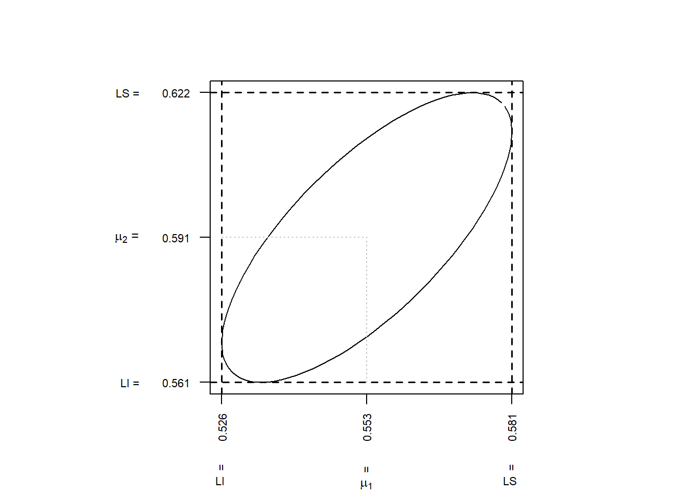
Ahora, los IC-Simultáneos de Bonferroni están dados por: \[ \overline{x}_1 \ \ \pm \ \ t_{\frac{\alpha}{2p}\ ; \ n-1}\ \sqrt{\frac{s_{11}}{n}} \]
\[ 0.564 \ \ \pm \ \ t_{0.05/2(2)\ ;\ 41} \sqrt{ \frac{0.0144}{42} } \] \[ 0.564 \ \ \pm \ \ 0.0374 \]
\[ \ \ ie. \ \ \: 0.5266 \leq \mu_1 \leq 0.6014 \]
y para \(\mu_2\) se tiene:
\[ \overline{x}_2 \ \ \pm \ \ t_{\frac{\alpha}{2p}\ ; \ n-1}\ \sqrt{\frac{s_{33}}{n}} \]
\[ 0.603 \ \ \pm \ \ t_{0.05/2(2)\ ;\ 41} \sqrt{ \frac{0.0145}{42} } \] \[ 0.603 \ \ \pm \ \ 0.0375 \]
\[ \ \ ie. \ \ \: 0.5655 \leq \mu_2 \leq 0.6405 \]
El siguiente gráfico muestra los Intervalos de Confianza Simultáneos de Bonferroni del \(95\%\) para \(\mu_1\) y \(\mu_2\). Al igual que la respectiva Región de Confianza.
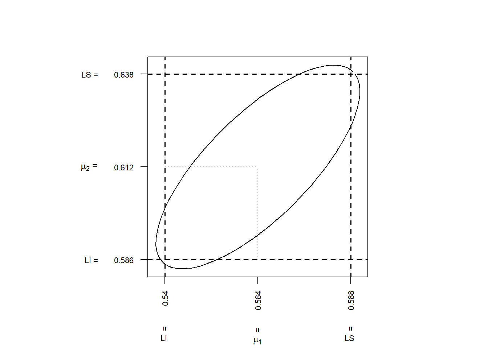
El siguiente gráfico muestra los Intervalos de Confianza \(T^2\)-simultáneos del \(95\%\) para \(\mu_1\) y \(\mu_2\) junto con los Intervalos de Confianza Simultáneos de Bonferroni del \(95\%\). Al igual que la respectiva Región de Confianza.
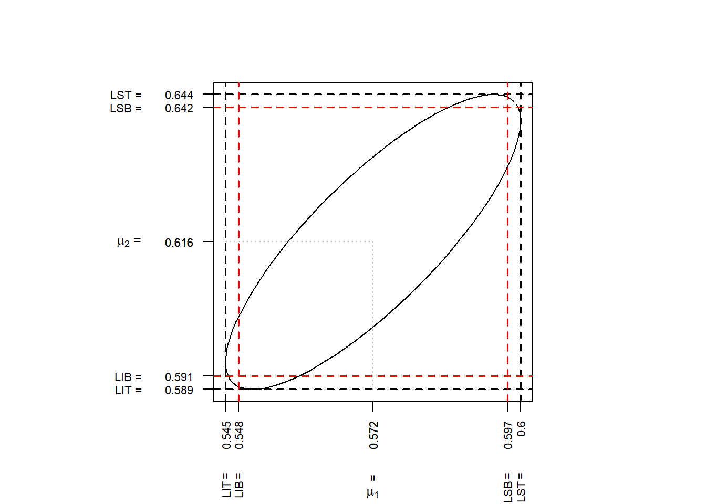
Para cada componente, el intervalo de Bonferroni cae dentro del correspondiente intervalo \(T^2\).
Por tanto, la región rectangular formada por los Intervalos de Confianza de Bonferroni cae dentro la región rectangular formada por los Intervalos de Confianza \(T^2\)-simultáneos.
Por otro lado, la región (o elipse) de confianza del \(95\%\) del vector \(\underline{\boldsymbol \mu}\) proporciona todos los valores plausibles para los pares \((\mu_1 \ , \ \mu_2)\) cuando se tiene en cuenta la correlación entre las variables medidas.
4.9.5.2 Comparación de IC \(T^2\)-Simultáneos con los IC Simultáneos de Bonferroni
Los intervalos de confianza de Bonferroni para combinaciones lineales \(\underline{a}^t \underline{\boldsymbol \mu}\) y los análogos intervalos de confianza \(T^2\)-simultáneos, tienen la forma general,
\[ \underline{a}^t \underline{\overline{\mathbf{x}}} \ \ \pm \ \ (\text{Valor Crítico}) \sqrt{\frac{\underline{a}^t \mathbf{S}\underline{a}}{n}} \]
Por tanto, para cada grupo de \(m\) intervalos simultáneos la razón entre las longitudes de de los IC de Bonferroni y los IC \(T^2\)-Simultáneos está dada por:
\[ \frac{\text{Longitud del Intervalo de Bonferroni}}{\text{Longitud del Intervalo}\ T^2}=\frac{t_{\alpha/2m\ ; \ n-1}}{\sqrt{\frac{(n-1)p}{n-p}\ F_{\alpha\ ; \ p\ ,\ n-p}\ \ }\ \ } \]
lo cual no depende de las cantidades aleatorias \(\underline{\overline{\mathbf{x}}}\) y \(\mathbf{S}\). Entre más cercano a uno esté dicha razón, mas similares son dichos intervalos, y entre más alejado de uno esté dicha razón, más precisos son los IC de Bonferroni comparados con los \(T^2\)-Simultáneos.
Para un número pequeño \(m\) de funciones específicas \(\underline{a}^t \underline{\boldsymbol \mu}\), los intervalos de Bonferroni siempre serán más cortos.
La siguiente tabla muestra cuánto más cortos son para valores seleccionados de \(n\) y \(p\).
A continuación se tiene la comparación de la razón entre dichas longitudes para \(1-\alpha=0.95\) y \(m=p\) para distintos valores. \[ \begin{array}{c|ccc}\hline & & m=p\\\hline n&2&4&10\\\hline 15&0.88&0.69&0.29\\ 25&0.90&0.75&0.48\\ 50&0.91&0.78&0.58\\ 100&0.91&0.80&0.62\\ \infty &0.91&0.81&0.66\\ \end{array} \]
Se observa que el método de Bonferroni simepre proporciona intervalos más cortos cuando \(m=p\). Debido a que los intervalos simultáneos de Bonferroni son más fáciles de aplicar y son relativamente más cortos para hacer inferencia, en la práctica, generalmente son preferidos.
4.9.6 Intervalos de Confianza Simultáneos \(\chi^2\) (caso n-Grande)
Cuando el tamaño de la muestra es grande, las pruebas de hipótesis y las regiones de confianza para \(\underline{\boldsymbol \mu}\), pueden construirse sin el supuesto de normalidad. Las desviaciones serias o graves de normalidad pueden superarse con muestras de gran tamaño. Tanto las pruebas de hipótesis como las afirmaciones de confianza simultáneas tendrán entonces (aproximadamente) sus niveles nominales.
Las ventajas asociadas con el uso de muestras grandes pueden compensarse parcialmente por una pérdida de información en la muestra, causada por el uso solamente de las estadísticas de resumen \(\underline{\overline{\mathbf{x}}}\) y \(\mathbf{S}\). Por otro lado, debido a que \((\underline{\overline{\mathbf{x}}} \ , \ \mathbf{S})\) es una estadística de resumen suficiente para poblaciones normales multivariadas, entonces entre más cerca se encuentre la población objeto de estudio a la normalidad multivariada, la información muestral será utilizada mas eficientemente para hacer inferencias.
Todas las inferencias acerca de \(\underline{\boldsymbol \mu}\) en el caso de muestras grandes se basan en la distribución \(\chi^2\). Como se conoce de temas tratados anteriormente para \(n\)-grande se tiene que: \[ n\bigl(\underline{\overline{\mathbf{x}}}-\underline{\boldsymbol \mu} \bigr)^t \mathbf{S}^{-1}\bigl(\underline{\overline{\mathbf{x}}}-\underline{\boldsymbol \mu} \bigr) \approx \chi_p^2 \]
por lo tanto: \[ P\biggl[ n\bigl(\underline{\overline{\mathbf{x}}}-\underline{\boldsymbol \mu} \bigr)^t \mathbf{S}^{-1}\bigl(\underline{\overline{\mathbf{x}}}-\underline{\boldsymbol \mu} \bigr) \leq \chi_{\alpha\ ,\ p}^2 \biggr]= 1-\alpha \]
donde \(\chi_{\alpha\ ,\ p}^2\)-es el percentil \((1-\alpha)100\%\) de la distribución \(\chi^2\).
Lo anterior nos lleva a procedimientos de pruebas de hipótesis e intervalos de confianza simultáneos definidos en los resultados que siguen.
Teorema 4.2 (PH a Partir de Regiones de Confianza Chi2) Sea \(\underline{\mathbf{x}}_1,\underline{\mathbf{x}}_2,\ldots,\underline{\mathbf{x}}_n\) una m.a de una población \(p\)-variada, con media \(\underline{\boldsymbol \mu}\) y matriz de var-cov \(\mathbf{\Sigma}\)-definida positiva, entonces cuando \(n-p\)-es grande, en la prueba de hipóteis:
\[ \begin{cases} H_{\ 0} \ \ : \ \ \underline{\boldsymbol \mu}=\underline{\boldsymbol \mu}_{\ 0} \\ \\ H_{\ 0} \ \ : \ \ \underline{\boldsymbol \mu}\neq \underline{\boldsymbol \mu}_{\ 0} \end{cases} \]
se rechaza \(H_{\ 0}\) en favor de \(H_1\) con un nivel de significancia de aproximadamente \(\alpha\) si se cumple que: \[ n\bigl(\underline{\overline{\mathbf{x}}}-\underline{\boldsymbol \mu}_{\ 0} \bigr)^t \mathbf{S}^{-1}\bigl(\underline{\overline{\mathbf{x}}}-\underline{\boldsymbol \mu}_{\ 0} \bigr) > \chi_{\alpha}^2 \]
donde \(\chi_{\alpha\ ,\ p}^2\)-es el percentil \((1-\alpha)100\%\) de la distribución \(\chi^2\).
En el caso del uso de la teoría de la distribución normal (muestras pequeñas) se tenía que:
\[ n\bigl(\underline{\overline{\mathbf{x}}}-\underline{\boldsymbol \mu} \bigr)^t \mathbf{S}^{-1}\bigl(\underline{\overline{\mathbf{x}}}-\underline{\boldsymbol \mu} \bigr) \sim \frac{(n-1)p}{n-p}\ F_{a-\alpha\ ,\ p,\ n-p} \]
con lo cual la Estadística de Prueba usada en ambos casos es la misma, ie. \[ T^2=n\bigl(\underline{\overline{\mathbf{x}}}-\underline{\boldsymbol \mu}_{\ 0} \bigr)^t \mathbf{S}^{-1}\bigl(\underline{\overline{\mathbf{x}}}-\underline{\boldsymbol \mu}_{\ 0} \bigr) \]
pero, los valores críticos usados en cada caso son diferentes.
Sin embargo, ambos procedimientos de pruebas de hipótesis producen los mismos resultados en los casos en donde la prueba \(\chi^2\)-es adecuada, es decir cuando \(n\)-es grande, lo cual se debe a que ambos valores críticos
\[ \frac{(n-1)p}{n-p}F_{a-\alpha\ ,\ p,n-p} \ \ \ \ \ \text{y} \ \ \ \ \ \chi_{\alpha\ , \ p}^2 \]
son aproximadamente iguales en el caso de \(n\)-grande con respecto a \(p\), ie. si \(n-p\)-es grande, es decir:
\[ \frac{(n-1)p}{n-p}F_{a-\alpha\ ,\ p,n-p} \ \ \approx \ \ \chi_{\alpha\ , \ p}^2. \]
Teorema 4.3 (IC Simultáneos Chi2) Sea \(\underline{\mathbf{x}}_1,\underline{\mathbf{x}}_2,\ldots,\underline{\mathbf{x}}_n\) una m.a de una población \(p\)-variada, con vector de medias \(\underline{\boldsymbol \mu}\) y matriz de var-cov \(\mathbf{\Sigma}\)-definida positiva, entonces cuando \(n-p\)-es grande
los intervalos:
\[ \underline{a}^t\underline{\overline{\mathbf{x}}}\ \pm\ \underbrace{ \sqrt{\chi_{\alpha\ ;\ p}^2 } } \frac{ \sqrt{ \underline{a}^t \mathbf{S} \underline{a}}}{ \sqrt{n} } \]
A diferencia de los IC \(T^2\)-Simultáneos y de los IC de Bonferroni:
\[ \underline{a}^t\underline{\overline{\mathbf{x}}}\ \pm\ \underbrace{ \sqrt{\frac{(n-1)p}{(n-p)}\ F_{\alpha\ ;\ p\ ,\ n-p} } } \frac{ \sqrt{ \underline{a}^t \mathbf{S} \underline{a}}}{ \sqrt{n} } \ \ \ \ \ \ \ \ \text{y} \ \ \ \ \ \ \ \underline{a}^t\underline{\overline{\mathbf{x}}}\ \pm\ \underbrace{ t_{\alpha/2p\ ;\ n-1} }\frac{\sqrt{\underline{a}^t \mathbf{S} \underline{a}}}{\sqrt{n}} \]
contendrá a \(\underline{a}^t \underline{\boldsymbol{\mu}}\) para todo \(\underline{a}\), con una probabilidad aproximada de \((1-\alpha)\).
A estos I.C simultáneos, se les llaman Intervalos de Confianza \(\chi^2\)-simultáneos, ya que la probabilidad de cobertura de dichos intervalos se determina con la distribución \(\chi^2\).
Por lo tanto, los intervalos o afirmaciones de confianza simultáneos para las componentes de medias \(\mu_i\), con una confianza aproximada del \(100(1-\alpha)\%\) son:
\[ \overline{x}_1 - \sqrt{\chi_{\alpha\ ; \ p}^2}\ \sqrt{\frac{s_{11}}{n}} \leq \mu_1 \leq \overline{x}_1 + \sqrt{\chi_{\alpha\ ; \ p}^2}\ \sqrt{\frac{s_{11}}{n}} \]
\[ \overline{x}_2 - \sqrt{\chi_{\alpha\ ; \ p}^2}\ \sqrt{\frac{s_{22}}{n}} \leq \mu_2 \leq \overline{x}_2 + \sqrt{\chi_{\alpha\ ; \ p}^2}\ \sqrt{\frac{s_{22}}{n}} \]
\[ \vdots \]
\[ \vdots \]
\[ \overline{x}_p - \sqrt{\chi_{\alpha\ ; \ p}^2}\ \sqrt{\frac{s_{pp}}{n}} \leq \mu_p \leq \overline{x}_p + \sqrt{\chi_{\alpha\ ; \ p}^2}\ \sqrt{\frac{s_{pp}}{n}} \]
Además, cada par de medias \((\mu_i,\mu_k)\), \(i, k=1, 2, \cdots, p\), estarán contenidas en la elipse de confianza del \((1-1)100\%\) dada por:
\[ n\begin{bmatrix} \overline{x}_i-\mu_i \\ \overline{x}_k-\mu_k \end{bmatrix}^t \begin{bmatrix} s_{ii} & s_{ik} \\ s_{ik} & s_{kk} \end{bmatrix}^{-1} \begin{bmatrix} \overline{x}_i-\mu_i \\ \overline{x}_k-\mu_k \end{bmatrix} \leq \chi_{\alpha\ ; \ p}^2 \]
o equivalentemente: \[ \begin{bmatrix} \overline{x}_i-\mu_i \\ \overline{x}_k-\mu_k \end{bmatrix}^t \begin{bmatrix} s_{ii} & s_{ik} \\ s_{ik} & s_{kk} \end{bmatrix}^{-1} \begin{bmatrix} \overline{x}_i-\mu_i \\ \overline{x}_k-\mu_k \end{bmatrix} \leq k^2= \frac{ \chi_{\alpha\ ; \ p}^2}{n} \]
Observaciónes:
Es una buena práctica estadística sujetar estos procedimientos para muestras grandes a los mismos chequeos usados para el caso de los métodos normales. Aunque desviaciones pequeñas o moderadas de la normalidad no causan problemas cuando \(n\) es grande, las desviaciones extremas sí pueden causarlos. Concretamente, la verdadera tasa de error puede estar lejos de su nivel nominal \(\alpha\).
Si, basados en los gráficos \(Q-Q\)-plot y otras herramientas de diagnóstico, se detectan observaciones atípicas y otras formas de desviaciones extremas, se deben aplicar acciones correctivas adecuadas, las cuales pueden incluir transformaciones de los datos.
En general, los resultados anteriores son útiles para muestras muy grandes.
Ejemplo 4.33 (Ejemplo IC Simultáneos Chi2) Un profesor de música examinó las habilidades musicales de miles de estudiantes nativos finlandeses para establecer las normas nacionales en Finlandia. Los siguientes resultados están basados en \(n=96\) estudiantes.
| Variables | Media | Desviación Estándar |
|---|---|---|
| \(X_1\)-Melodía | \(28.1\) | \(5.76\) |
| \(X_2\)-Armonía | \(26.6\) | \(5.85\) |
| \(X_3\)-Tono | \(35.4\) | \(3.82\) |
| \(X_4\)-Métrica | \(34.2\) | \(5.12\) |
| \(X_5\)-Fraséo | \(23.6\) | \(3.76\) |
| \(X_6\)-Balance | \(22.0\) | \(3.93\) |
| \(X_7\)-Estilo | \(22.7\) | \(4.03\) |
De los resultados anteriores, los intervalos simultáneos del \(90\%\) de confianza para las componentes de medias \(\mu_i\), \(i=1,2,\ldots,p=7\) son de la forma: \[ \overline{x}_i\ \pm\ \sqrt{\chi_{1-\alpha\ , \ p=7}^2 } \sqrt{\frac{s_{ii}}{n}} \]
donde \(\chi_{0.9\ ; \ 7}^2 =12.017\).
Por lo tanto, con una confianza aproximada del \(90\%\) los intervalos de confianza \(\chi^2\)-simultáneos para cada media \(\mu_i\) están dados por:
\[ \overline{x}_1 - \sqrt{\chi_{1-\alpha\ , \ p}^2 }\ \sqrt{\frac{S_{11}}{n} }\ \ \ \leq \mu_1 \leq \ \ \ \overline{x}_1 + \sqrt{\chi_{1-\alpha\ , \ p}^2 }\ \sqrt{\frac{S_{11}}{n} } \]
\[ 28.1 - \sqrt{12.017} \sqrt{\frac{33.1776}{96} } \ \ \ \leq \mu_1 \leq \ \ \ 28.1 + \sqrt{12.017} \sqrt{\frac{33.1776}{96} } \]
\[ \ \ \mu_1 \ \ \ \in \ \ \ \ 26.0621\ \ \ \leq \mu_1 \leq \ \ \ 30.1379 \]
\[ \overline{x}_2 - \sqrt{\chi_{1-\alpha\ , \ p}^2 }\ \sqrt{\frac{S_{22}}{n} }\ \ \ \leq \mu_2 \leq \ \ \ \overline{x}_2 + \sqrt{\chi_{1-\alpha\ , \ p}^2 } \ \sqrt{\frac{S_{22}}{n} } \]
\[ 26.6 - \sqrt{12.017} \sqrt{\frac{34.2225}{96} } \ \ \ \leq \mu_2 \leq \ \ \ 26.6 + \sqrt{12.017} \sqrt{\frac{34.2225}{96} } \]
\[ \ \ \mu_2 \ \ \ \in \ \ \ \ 24.5302\ \ \ \leq \mu_2 \leq \ \ \ 28.6698 \]
\[ \overline{x}_3 - \sqrt{\chi_{1-\alpha\ , \ p}^2 }\ \sqrt{\frac{S_{33}}{n} }\ \ \ \leq \mu_3 \leq \ \ \ \overline{x}_3 + \sqrt{\chi_{1-\alpha\ , \ p}^2 }\ \sqrt{\frac{S_{33}}{n} } \]
\[ 35.4 - \sqrt{12.017} \sqrt{\frac{14.5924}{96} } \ \ \ \leq \mu_3 \leq \ \ \ 35.4 + \sqrt{12.017} \sqrt{\frac{14.5924}{96} } \]
\[ \ \ \mu_3 \ \ \ \in \ \ \ \ 34.0485\ \ \ \leq \mu_3 \leq \ \ \ 36.7515 \]
\[ \overline{x}_4 - \sqrt{\chi_{1-\alpha\ , \ p}^2 }\ \sqrt{\frac{S_{44}}{n} }\ \ \ \leq \mu_4 \leq \ \ \ \overline{x}_4 + \sqrt{\chi_{1-\alpha\ , \ p}^2 }\ \sqrt{\frac{S_{44}}{n} } \]
\[ 34.2 - \sqrt{12.017} \sqrt{\frac{26.2144}{96} } \ \ \ \leq \mu_4 \leq \ \ \ 34.2 + \sqrt{12.017} \sqrt{\frac{26.2144}{96} } \]
\[ \ \ \mu_4 \ \ \ \in \ \ \ \ 32.3885\ \ \ \leq \mu_4 \leq \ \ \ 36.0115 \]
\[ \overline{x}_5 - \sqrt{\chi_{1-\alpha\ , \ p}^2 } \ \sqrt{\frac{S_{55}}{n} }\ \ \ \leq \mu_5 \leq \ \ \ \overline{x}_5 + \sqrt{\chi_{1-\alpha\ , \ p}^2 } \ \sqrt{\frac{S_{55}}{n} } \]
\[ 23.6 - \sqrt{12.017} \sqrt{\frac{14.1376}{96} } \ \ \ \leq \mu_5 \leq \ \ \ 23.6 + \sqrt{12.017} \sqrt{\frac{14.1376}{96} } \]
\[ \ \ \mu_5 \ \ \ \in \ \ \ \ 22.2697\ \ \ \leq \mu_5 \leq \ \ \ 24.9303 \]
\[ \overline{x}_6 - \sqrt{\chi_{1-\alpha\ , \ p}^2 } \ \sqrt{\frac{S_{66}}{n} }\ \ \ \leq \mu_6 \leq \ \ \ \overline{x}_6 + \sqrt{\chi_{1-\alpha\ , \ p}^2 } \ \sqrt{\frac{S_{66}}{n} } \]
\[ 22 - \sqrt{12.017} \sqrt{\frac{15.4449}{96} } \ \ \ \leq \mu_6 \leq \ \ \ 22 + \sqrt{12.017} \sqrt{\frac{15.4449}{96} } \]
\[ \ \ \mu_6 \ \ \ \in \ \ \ \ 20.6096\ \ \ \leq \mu_6 \leq \ \ \ 23.3904 \]
\[ \overline{x}_7 - \sqrt{\chi_{1-\alpha\ , \ p}^2 } \ \sqrt{\frac{S_{77}}{n} }\ \ \ \leq \mu_7 \leq \ \ \ \overline{x}_7 + \sqrt{\chi_{1-\alpha\ , \ p}^2 } \ \sqrt{\frac{S_{77}}{n} } \]
\[ 22.7 - \sqrt{12.017} \sqrt{\frac{16.2409}{96} } \ \ \ \leq \mu_7 \leq \ \ \ 22.7 + \sqrt{12.017} \sqrt{\frac{16.2409}{96} } \]
\[ \ \ \mu_7 \ \ \ \in \ \ \ \ 21.2742\ \ \ \leq \mu_7 \leq \ \ \ 24.1258 \]
4.9.7 IC Simultáneos para n-Grande Usando la Normal Estándar \(Z_\alpha\)
Ahora, basado en miles de estudiantes americanos, el investigador podría querer probar la hipótesis de que el perfil musical esta dado por: \[ \underline{\boldsymbol \mu}=\underline{\boldsymbol \mu}_{\ 0}=\begin{bmatrix} 31 \\ 27 \\ 34 \\ 31 \\ 23 \\ 22 \\ 22 \end{bmatrix} \]
De los intervalos o afirmaciones simultáneos anteriores, se observa que las componentes de melodía (\(X_1\)), tono (\(X_3\)) y métrica (\(X_4\)) de \(\underline{\boldsymbol \mu}_{\ 0}\) no parecen ser valores viables para los valores de las medias correspondientes a los estudiantes finlandeses.
Cuando el tamaño muestral es grande, los intervalos de confianza uno a la vez o separados para las medias individuales \(\mu_i\) son de la forma: \[ \overline{x}_i - Z_{\alpha/2} \sqrt{\frac{s_{ii}}{n}} \leq \mu_i \leq \overline{x}_i + Z_{\alpha/2} \sqrt{\frac{s_{ii}}{n}} \ , \ \ i=1,2,\ldots,p \] donde \(Z_{\alpha/2}\) es el percentil \((1-\alpha/2)100\)-superior de la distribución normal estándar, ie. de la \(N(0,1)\).
Los intervalos de confianza simultáneos de Bonferroni para \(m=p\)-afirmaciones sobre las medias individuales tienen la misma forma vista anteriormente (ver. 4.9.5), pero con valores críticos dados por \(Z_{\alpha/2p}\), es decir:
\[ \overline{x}_i - Z_{\alpha /2p}\ \sqrt{\frac{s_{ii}}{n}} \leq \mu_i \leq \overline{x}_i - Z_{\alpha/2p}\ \sqrt{\frac{s_{ii}}{n}} \ , \ \ i=1,2,\ldots,p \]
La siguiente tabla presenta los intervalos de confianza individuales o uno a la vez \(Z_{\alpha/2}\), IC de Bonferroni usando \(Z_{\alpha/2p}\) y los IC \(\chi^2\)-simultáneos ( los cuales son las sombras o proyecciones de las elipses de confianza usando \(\chi^2_{1-\alpha\ ,\ p}\approx F_{1-\alpha\ ; \ p,n-p }\)) para los datos de aptitud musical.
Los percentiles usados para cada caso son:
\[ Z_{\alpha/2}=Z_{0.975}=1.96\ \ ; \ \ Z_{\alpha/2p}=Z_{1-0.05/(2*7)}=Z_{0.996}=2.69 \ \ \ y \ \ \chi^2_{\alpha\ ,\ p}=\chi_{0.95\ , \ 7}^2=14.07 \].
| Variables | Intervalos \(Z_{\alpha/2}=1.96\) | Intervalos de Bonferroni con \(Z_{\alpha/2p}=2.69\) | Intervalos \(\chi^2\) (o sombras de \(\chi^2(\alpha)=14.07\)) |
|---|---|---|---|
| \(X_1\) | 26.95 - 29.25 | 25.52 - 29.68 | 25.90 - 30.30 |
| \(X_2\) | 25.43 - 27.77 | 24.99 - 28.21 | 24.36 - 28.84 |
| \(X_3\) | 34.64 - 36.16 | 34.35 - 36.45 | 33.94 - 36.86 |
| \(X_4\) | 33.18 - 35.22 | 32.79 - 35.61 | 32.24 - 36.16 |
| \(X_5\) | 22.85 - 24.35 | 22.57 - 24.63 | 22.16 - 25.04 |
| \(X_6\) | 21.21 - 22.79 | 20.92 - 23.08 | 20.50 - 23.50 |
| \(X_7\) | 21.89 - 23.51 | 21.59 - 23.81 | 21.16 - 24.24 |
Por ejemplo, para la variable \(X_1\) se tienen los cálculos dados por:
\[ \overline{x}_1 - Z_{\alpha/2} \sqrt{\frac{S_{11}}{n} }\ \ \ \leq \mu_1 \leq \ \ \ \overline{x}_1 + Z_{\alpha/2} \sqrt{\frac{S_{11}}{n} } \] \[ 28.1 - 1.96 \sqrt{\frac{33.1776}{96} } \ \ \ \leq \mu_1 \leq \ \ \ 28.1 + 1.96 \sqrt{\frac{33.1776}{96} } \]
\[ \ \ \mu_1 \ \ \ \in \ \ \ \ 26.9478\ \ \ \leq \mu_1 \leq \ \ \ 29.2522 \]
\[ \overline{x}_1 - Z_{\alpha /2p} \sqrt{\frac{S_{11}}{n} }\ \ \ \leq \mu_1 \leq \ \ \ \overline{x}_1 + Z_{\alpha /2p} \sqrt{\frac{S_{11}}{n} } \] \[ 28.1 - 2.6901 \sqrt{\frac{33.1776}{96} } \ \ \ \leq \mu_1 \leq \ \ \ 28.1 + 2.6901 \sqrt{\frac{33.1776}{96} } \]
\[ \ \ \mu_1 \ \ \ \in \ \ \ \ 26.5186\ \ \ \leq \mu_1 \leq \ \ \ 29.6814 \]
\[ \overline{x}_1 - \sqrt{\chi_{1-\alpha\ , \ p}^2 } \sqrt{\frac{S_{11}}{n} }\ \ \ \leq \mu_1 \leq \ \ \ \overline{x}_1 + \sqrt{\chi_{1-\alpha\ , \ p}^2 } \sqrt{\frac{S_{11}}{n} } \] \[ 28.1 - \sqrt{14.0671} \sqrt{\frac{33.1776}{96} } \ \ \ \leq \mu_1 \leq \ \ \ 28.1 + \sqrt{14.0671} \sqrt{\frac{33.1776}{96} } \]
\[ \ \ \mu_1 \ \ \ \in \ \ \ \ 25.8951\ \ \ \leq \mu_1 \leq \ \ \ 30.3049 \]
Aunque el tamaño muestral puede ser grande, en la práctica algunos estadísticos, generalmente prefieren usar los percentiles basados en las distribuciones \(F\) y \(t\) de Student en lugar de usar los percentiles basados en la distribución chi-cuadrado y normal estándar. Estos últimos valores (ie. los percentiles d ela chi-cuadrado y la normal) son los límites de los valores de las distribuciones \(F\) y \(t\) para tamaños muestrales infinitos.
Los valores de los percentiles basados en las distribuciones \(F\) y \(t\) producen intervalos más amplios y por tanto, son más conservadores.
La siguiente tabla presenta IC usando los valores de los percentiles basados en las distribuciones \(F\) y \(t\), es decir, los intervalos de confianza individuales con \(t_{\alpha/2,n-1}\), los IC de Bonferroni usando \(t_{\alpha/2p,n-1}\) y los IC \(T^2\)-simultáneos ( los cuales son las sombras o proyecciones de las elipses de confianza usando \(F_{1-\alpha\ ; \ p,n-p }\)) para los datos de aptitud musical.
Los valoresm críticos de los percentiles usados para cada caso son:
\[ t_{\alpha/2,n-1}=t_{0.975\ , \ 95}=1.99 \ \ ,\ \ t_{1-\alpha/2p,n-1}=t_{1-0.05/(2*7)\ , \ 95}=2.75 \ \ \ y \ \ \ F_{0.05\ ; \ 7\ ,\ 89}=2.11 \]
| Variables | Intervalos \(t\)-Student \(t_{\alpha/2,n-1}=1.99\) | Intervalos de Bonferroni con \(t_{1-\alpha/2p,n-1}=2.75\) | Intervalos \(T^2\) (o sombras de \(F_{1-\alpha\ ; \ p,n-p }=2.11\)) |
|---|---|---|---|
| \(X_1\) | 26.93 - 29.27 | 26.48 - 29.72 | 25.76 - 30.44 |
| \(X_2\) | 25.41 - 27.79 | 24.96 - 28.24 | 24.23 - 28.97 |
| \(X_3\) | 34.63 - 36.17 | 34.33 - 36.47 | 33.85 - 36.95 |
| \(X_4\) | 33.16 - 35.24 | 32.76 - 35.64 | 32.12 - 36.28 |
| \(X_5\) | 22.84 - 24.36 | 22.54 - 24.66 | 22.07 - 25.13 |
| \(X_6\) | 21.20 - 22.80 | 20.90 - 23.10 | 20.41 - 23.59 |
| \(X_7\) | 21.88 - 23.52 | 21.57 - 23.83 | 21.07 - 24.33 |
Por ejemplo, para la variable \(X_1\) se tienen los cálculos dados por:
\[ \overline{x}_1 - t_{1-\alpha/2,n-1} \sqrt{\frac{S_{11}}{n} }\ \ \ \leq \mu_1 \leq \ \ \ \overline{x}_1 + t_{1-\alpha/2,n-1} \sqrt{\frac{S_{11}}{n} } \] \[ 28.1 - 1.9853 \sqrt{\frac{33.1776}{96} } \ \ \ \leq \mu_1 \leq \ \ \ 28.1 + 1.9853 \sqrt{\frac{33.1776}{96} } \]
\[ \ \ \mu_1 \ \ \ \in \ \ \ \ 26.9329\ \ \ \leq \mu_1 \leq \ \ \ 29.2671 \]
\[ \overline{x}_1 - t_{1-\alpha /2p,n-1} \sqrt{\frac{S_{11}}{n} }\ \ \ \leq \mu_1 \leq \ \ \ \overline{x}_1 + t_{1-\alpha /2p,n-1} \sqrt{\frac{S_{11}}{n} } \] \[ 28.1 - 2.7496 \sqrt{\frac{33.1776}{96} } \ \ \ \leq \mu_1 \leq \ \ \ 28.1 + 2.7496 \sqrt{\frac{33.1776}{96} } \]
\[ \ \ \mu_1 \ \ \ \in \ \ \ \ 26.4836\ \ \ \leq \mu_1 \leq \ \ \ 29.7164 \]
\[ \overline{x}_1 - \sqrt{ \frac{(n-1)p}{n-p}F_{1-\alpha\ ; \ p,n-p} } \sqrt{\frac{S_{11}}{n} }\ \ \ \leq \mu_1 \leq \ \ \ \overline{x}_1 + \sqrt{ \frac{(n-1)p}{n-p}F_{1-\alpha\ ; \ p,n-p} } \sqrt{\frac{S_{11}}{n} } \] \[ 28.1 - \sqrt{15.7975} \sqrt{\frac{33.1776}{96} } \ \ \ \leq \mu_1 \leq \ \ \ 28.1 + \sqrt{15.7975} \sqrt{\frac{33.1776}{96} } \]
\[ \ \ \mu_1 \ \ \ \in \ \ \ \ 25.7634\ \ \ \leq \mu_1 \leq \ \ \ 30.4366 \]
Comparando las dos últimas tablas, se observa que todos los intervalos de la última tabla son más amplios. Sin embargo, debido al tamaño relativamente grande de \(n=96\), las diferencias son de décimas.
Observación final:
Finalmente, la independencia de las observaciones multivariadas es crucial, y los resultados vistos basados sobre este supuesto pueden estar muy equivocados si las observaciones son dependientes.
Lectura: Inferencias para muestras grandes sobre proporciones, ver. (Johnson and Wichern 2007,pag. 234).